<!doctype html>
<html lang="en">
<head>
  <meta charset="utf-8">
  <meta name="viewport" content="width=device-width, initial-scale=1">
  <title>arxiv digest — 2026-09-16</title>
  <style>
:root {
  --bg: #ffffff;
  --fg: #1f2328;
  --muted: #59636e;
  --border: #d0d7de;
  --card: #f6f8fa;
  --link: #0969da;
}
body {
  max-width: 980px;
  margin: 0 auto;
  padding: 2rem 1rem 5rem;
  font-family: -apple-system, BlinkMacSystemFont, "Segoe UI", Helvetica, Arial, sans-serif;
  line-height: 1.55;
  color: var(--fg);
  background: var(--bg);
}
a { color: var(--link); }
img { max-width: 100%; height: auto; }
pre, code { background: var(--card); border-radius: 6px; }
pre { padding: 1rem; overflow-x: auto; }
blockquote { border-left: 4px solid var(--border); padding-left: 1rem; color: var(--muted); }
details { margin: 0.6rem 0; }
summary { cursor: pointer; font-weight: 600; }
.paper-figures-scroll {
  display: flex;
  gap: 1rem;
  overflow-x: auto;
  overscroll-behavior-x: contain;
  padding: 0.75rem 0.25rem 1rem;
  margin: 1rem 0 1.25rem;
  border-top: 1px solid var(--border);
  border-bottom: 1px solid var(--border);
  scroll-snap-type: x proximity;
}
.paper-figure-card {
  flex: 0 0 min(260px, 72vw);
  scroll-snap-align: start;
  background: var(--card);
  border: 1px solid var(--border);
  border-radius: 12px;
  padding: 0.55rem;
}
.paper-figure-card img {
  display: block;
  width: 100%;
  max-height: 240px;
  object-fit: contain;
  background: white;
  border-radius: 8px;
}
.paper-figure-caption {
  display: block;
  margin-top: 0.5rem;
  color: var(--muted);
  font-size: 0.85rem;
}
.figure-strip-hint {
  color: var(--muted);
  font-size: 0.9rem;
  margin-bottom: -0.3rem;
}
</style>
  <!-- MathJax: renders $...$ inline math and $$...$$ display math, plus
       \(...\) and \[...\]. Loaded from the official CDN; works offline
       once cached. Configured to skip code/pre blocks so arxiv IDs that
       look like dollar amounts don't get mangled. -->
  <script>
    window.MathJax = {
      tex: {
        inlineMath: [['$', '$'], ['\\(', '\\)']],
        displayMath: [['$$', '$$'], ['\\[', '\\]']],
        processEscapes: true,
        processEnvironments: true
      },
      options: {
        skipHtmlTags: ['script', 'noscript', 'style', 'textarea', 'pre', 'code'],
        ignoreHtmlClass: 'tex2jax_ignore',
        processHtmlClass: 'tex2jax_process'
      }
    };
  </script>
  <script id="MathJax-script" async
    src="https://cdn.jsdelivr.net/npm/mathjax@3/es5/tex-chtml.js"></script>
</head>
<body>
<header style="background-color: #333; color: white; padding: 15px; margin-bottom: 20px;">
  <h1 style="margin: 0; font-size: 24px;">
    <a href="https://ochelpan.github.io/arXiv_clean/" style="color: white; text-decoration: none;">Main</a>
  </h1>
</header>

<h1>Daily arXiv Report</h1>

<hr>
<p>
<a href="index.html">← Index</a>
 · <a href="papers_01.html">← Previous</a> · <a href="papers_03.html">Next →</a>
</p>
<hr>

<h2>Papers 21–40</h2>
<p><a id="paper-2609.15689"></a></p>
<h3 id="distribution-of-light-matter-quantum-correlations-with-a-temporally-multiplexed-solid-state-quantum-memory-array"><a href="http://arxiv.org/abs/2609.15689v1">Distribution of light-matter quantum correlations with a temporally multiplexed solid-state quantum memory array</a></h3>
<p><strong>Authors:</strong> Aya Mneimneh, Susana Plascencia, Manuel Gundin, Jonathan Hänni, Samuele Grandi, Markus Teller, Hugues de Riedmatten<br>
<strong>Type:</strong> experiment · <strong>Category:</strong> quantum information and computing · <strong>PDF:</strong> <a href="https://arxiv.org/pdf/2609.15689v1">https://arxiv.org/pdf/2609.15689v1</a><br>
<strong>Analysis basis:</strong> full PDF text, analyzed in chunks
<strong>Topic relevance:</strong> 🔥 <code>QC/QI experiment</code> <strong>4/5</strong> · <code>quantum optics experiment</code> <strong>3/5</strong> · <code>interference shaping light</code> <strong>1/5</strong></p>
<div class="figure-strip-hint">↔ Scroll figures horizontally</div>
<div class="paper-figures-scroll">
<figure class="paper-figure-card">
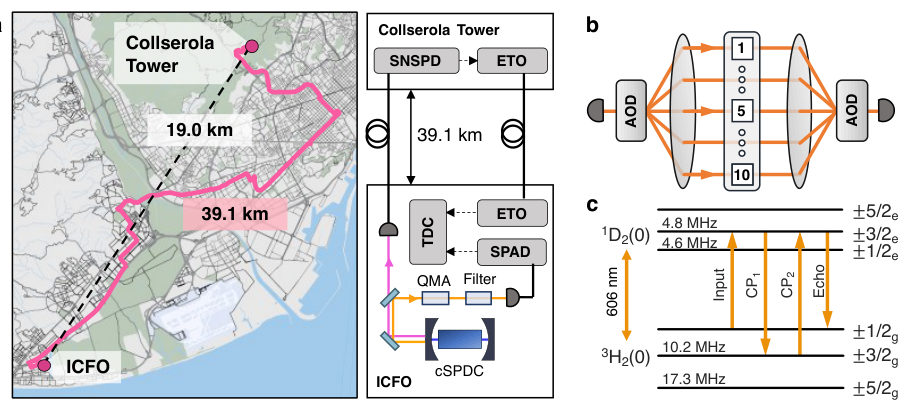
<figcaption class="paper-figure-caption"><b>Fig 1.</b> Fig. 1 Experimental setup. a) Quantum network testbed. Signal photons generated by the cSPDC source in ICFO are stored in the QMA and, upon on-demand retrieval, are spectrally filtered, detected by a single-photon avalanche detector (SPAD) and recorded by a time-to-digital converter (TDC). Telecom idler photons propagate to the Collserola Tower through the deployed fiber, where they are detected by superconducting nanowire single-photon detectors (SNSPDS). A pair of optical transducers (ETOs) sends the timestamps of the idler detections back to ICFO. b) The solid-state quantum memory array is realized with acousto-optical deflectors (AODs), which multiplex and demultiplex signal photons to...</figcaption>
</figure>
<figure class="paper-figure-card">
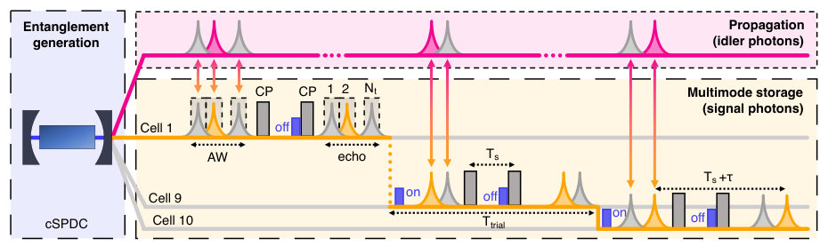
<figcaption class="paper-figure-caption"><b>Fig 2.</b> Fig. 2 Experimental sequence. The cSPDC source emits pairs of signal and idler photons within an acceptance window (AW) of 6 µs corresponding to Nt temporal modes. While the idler photon travels to the detector, the first cell Ns = 1 of the QMA absorbs the signal photon. Subsequently, a CP is applied, and the cSPDC pump is switched off. After a storage time Ts = 8 µs, a second CP is applied and leads to re-emission of the signal photon after Ts + τ = 18 µs. The cSPDC is switched on again, and quantum storage continues with the next memory cell. These steps are repeated until storage has been attempted with all memory cells.</figcaption>
</figure>
<figure class="paper-figure-card">
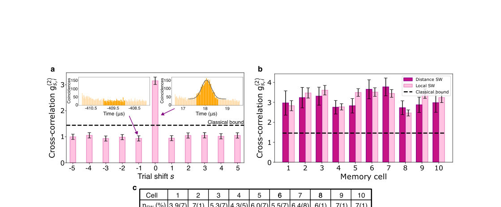
<figcaption class="paper-figure-caption"><b>Fig 3.</b> Fig. 3 Multimode single-photon storage. a) Cross-correlations of idlers and signals detected in a storage trial shifted by s from the idler. The insets show coincidence histograms of the signals and idlers. The peak in the right inset corresponds to the spin-wave echo of the retrieved signal photons. This echo is absent in the coincidence histogram in the left inset with s = −1. The highlighted area indicates the detection window TDW. b) Cross-correlations g(2) s,i for spin-wave storage with idlers detected locally and at distance with TDW = 1 µs. The dashed line indicates classical bounds bl = 1.42(16) and bd = 1.45(18) of the local and link measurements. c) Efficiencies of the...</figcaption>
</figure>
<figure class="paper-figure-card">
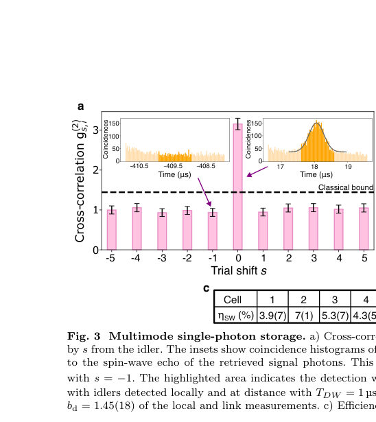
<figcaption class="paper-figure-caption"><b>Fig 4.</b> Fig. 3a and equal to about 90 % of the signal pho- ton, we evaluate g(2) s,i for trial shifts s = {−5, 5} and plot the resulting cross-correlations in Fig. 3a. See methods for details on the calculation of pi and ps. For s = 0 we measure a cross-correlation of g(2) s,i = 3.2(1). This value violates the classi- cal bound given by the Cauchy-Schwarz inequality</figcaption>
</figure>
<figure class="paper-figure-card">
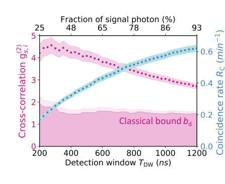
<figcaption class="paper-figure-caption"><b>Fig 5.</b> Fig. 4 Cross-correlation g(2) s,i and coincidence rate RC versus detection window TDW. The averaged cross- correlation and the total coincidence rate are plotted as a function of the detection window TDW with the correspond- ing fraction of photon within TDW. The classical bound bD is indicated as solid line and area below. The light area above marks the uncertainty of bD.</figcaption>
</figure>
</div>

<p><strong>Summary.</strong> This paper reports on distributing light-matter quantum correlations using a highly multiplexed solid-state quantum memory array. By leveraging both spatial and temporal multiplexing, the authors achieved quantum correlations in up to 60 modes and demonstrated a significant rate enhancement for quantum communication over a metropolitan fiber link. This work advances the feasibility of long-distance quantum networks.</p>
<p><strong>Why it may be interesting.</strong> This work directly addresses the physical implementation challenges of quantum networking by demonstrating high-rate entanglement distribution using solid-state memories, which is crucial for scaling quantum communication infrastructure.</p>
<details>
<summary>Detailed structure</summary>
<p><strong>Main problem.</strong> The primary challenge addressed is overcoming the fundamental rate limitation in long-distance quantum repeater architectures imposed by classical signaling time.</p>
<p><strong>Main result.</strong> The authors demonstrated light-matter quantum correlations in 60 spatio-temporal modes and achieved a 60-fold enhancement in the correlated telecom photon detection rate by utilizing multiplexing over a metropolitan fiber link.</p>
<p><strong>Method.</strong> Quantum correlations were distributed and measured using a time-multiplexed solid-state quantum memory array (QMA) coupled with a cSPDC source, and the resulting idler photons were sent over a 39.1 km fiber link.</p>
<p><strong>Model / system.</strong> The system uses a quantum memory array based on a Pr3+:Y2SiO5 crystal, employing both spatial (10 cells) and temporal (up to 6 modes/cell) multiplexing via the full atomic frequency comb protocol.</p>
<p><strong>Key observables.</strong> Cross-correlations ($g^{(2)}_{s,i}$), coincidence rates ($R_C$), and the rate enhancement factor.</p>
<p><strong>Important parameters / regimes.</strong> 39.1 km fiber link length, 60 spatio-temporal modes, $393 \mu	ext{s}$ round-trip communication time.</p>
<p><strong>Assumptions / limitations.</strong> The experiment operates in a realistic scenario where the generation rate is limited by the round-trip communication time.</p>
<p><strong>Figures summary.</strong> Figures illustrate the experimental setup, the temporal sequence of photon storage across multiple memory cells, and plots showing cross-correlations and the rate enhancement vs. the number of modes.</p>
<p><strong>Paper structure.</strong> The paper details the experimental setup, the protocol for storing and retrieving photons in the multiplexed QMA, the measurement of quantum correlations both locally and over a long-distance fiber link, and the quantitative analysis of rate enhancement.</p>
</details>
<details>
<summary>Abstract</summary>
<p>Multiplexed quantum memories increase the entanglement distribution rate in long-distance quantum repeater architectures by harnessing storage in several degrees of freedom. Here, we report on the distribution of light-matter quantum correlations using an array of time-multiplexed solid-state quantum memories. We store telecom-heralded single photons sequentially in up to ten memory cells using the full atomic frequency comb protocol with on-demand read-out in a Pr$^{3+}$:Y$_2$SiO$_5$ crystal. Leveraging both spatial and temporal multiplexing, we demonstrate quantum correlations between the telecom photon and up to 60 spatio-temporal modes of the quantum memory array. We then transmit the heralding telecom photon over 39.1 km of deployed optical fiber in the Metropolitan Area of Barcelona. In a realistic scenario where the generation rate is limited by the two-way communication time, we show that up to 15 % of the $393 μs$ round-trip communication time is filled with communication trials, leading to a 60-fold enhancement in the rate of detected telecom photons correlated with the quantum memory array, compared to a single-mode memory. With increased storage times and efficiencies, our multiplexed quantum memory array will constitute the backbone of a long-distance quantum network, establishing remote entanglement at high rates.</p>
</details>
<p><sub><a href="#top">↑ back to top</a></sub></p>

<p><a id="paper-2609.13988"></a></p>
<h3 id="noise-aware-derivative-feedback-of-a-harmonic-oscillator-under-quantum-limited-position-measurement"><a href="http://arxiv.org/abs/2609.13988v1">Noise-aware derivative feedback of a harmonic oscillator under quantum-limited position measurement</a></h3>
<p><strong>Authors:</strong> Vedran Vujnović<br>
<strong>Type:</strong> theory · <strong>Category:</strong> other · <strong>PDF:</strong> <a href="https://arxiv.org/pdf/2609.13988v1">https://arxiv.org/pdf/2609.13988v1</a><br>
<strong>Analysis basis:</strong> full PDF text, analyzed in chunks
<strong>Topic relevance:</strong> 🔥 <code>quantum measurements</code> <strong>4/5</strong> · <code>Keldysh / 2PI / non-Gaussian methods</code> <strong>1/5</strong> · <code>correlated / nonlocal dissipation</code> <strong>1/5</strong> · <code>driven-dissipative phase transition</code> <strong>1/5</strong> · <code>methods for driven-dissipative</code> <strong>1/5</strong></p>
<div class="figure-strip-hint">↔ Scroll figures horizontally</div>
<div class="paper-figures-scroll">
<figure class="paper-figure-card">
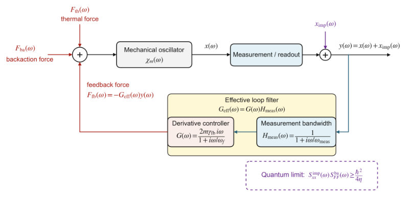
<figcaption class="paper-figure-caption"><b>Fig 1.</b> Fig. 1 Schematic of the measurement-based derivative-feedback loop used in the quantum-limited analysis. Thermal force Fth, measurement backaction Fba, and feedback force Ffb drive the mechanical oscillator with susceptibility χm(ω). The measured record is y(ω) = x(ω) + ximp(ω), where ximp is the imprecision noise. The feedback force is synthesized from the measured record through the effective loop filter Geff(ω) = G(ω)Hmeas(ω), giving Ffb(ω) = −Geff(ω)y(ω). The imprecision and backaction noises obey the quantum-limit constraint Simp xx (ω)Sba F F (ω) ≥ℏ2/(4η).</figcaption>
</figure>
<figure class="paper-figure-card">
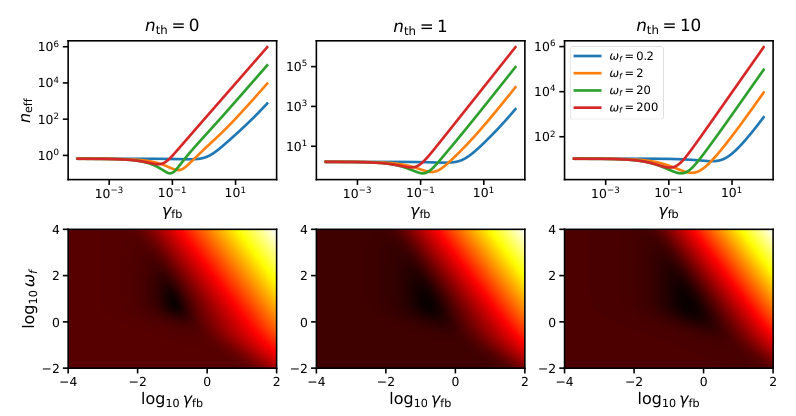
<figcaption class="paper-figure-caption"><b>Fig 2.</b> Fig. 2 Quantum-limited measurement-based band-limited derivative feedback for a harmonic oscillator with thermal forcing set by nth = 0, 1, and 10 from left to right. Top row: effective occupation neff versus feedback damping gain γfb for derivative cutoffs ωf ∈{0.2, 2, 20, 200} rad/s. Bottom row: optimized landscape neff(γfb, ωf) in the (γfb, ωf) design plane. In the bottom row, color encodes log10(neff) on the same scale in all three panels, with darker colors indicating lower occupation. The non-monotonic dependence on γfb and the finite optimal range of ωf illustrate the tradeoff between feedback-induced damping and imprecision-noise reinjection.</figcaption>
</figure>
<figure class="paper-figure-card">
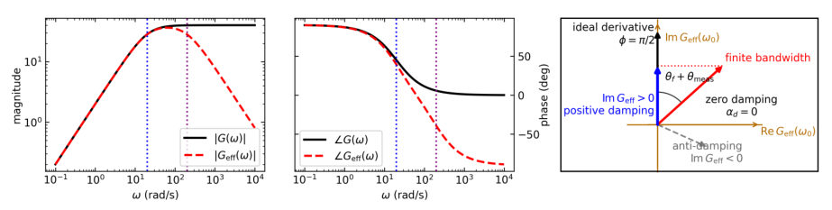
<figcaption class="paper-figure-caption"><b>Fig 3.</b> Fig. 3 Comparison of the derivative controller transfer function G(ω) and the effective loop filter Geff(ω) = G(ω)Hmeas(ω) when the finite bandwidth of the detector and readout chain, Hmeas(ω) = [1 + iω/ωmeas]−1, is included. Magnitude (left) and phase (middle) for G(ω) (black solid line) and Geff(ω) (red dashed line) with ωf (blue dotted line) and ωmeas (purple dotted line). For ω ≪ωmeas, Geff ≈G, while for ω ≫ωmeas the additional roll-off suppresses high-frequency reinjection of imprecision noise and introduces extra phase lag. The right panel gives a phasor interpretation of the effective response at ω = ω0. An ideal derivative lies along the positive imaginary axis, while the finite...</figcaption>
</figure>
<figure class="paper-figure-card">
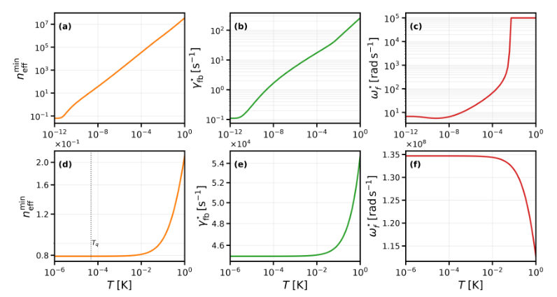
<figcaption class="paper-figure-caption"><b>Fig 4.</b> Fig. 4 Full-spectrum optimization of band-limited derivative feedback parameters for a quantum-limited position detector. Panels (a)–(c) show the original low-frequency illustrative case, while panels (d)–(f) show a representative MHz-scale case. The left column gives the minimum effective occupation nmin eff obtained from numerical integration of the steady-state variances and optimization over (γfb, ωf). The middle column gives the optimal feedback-damping gain γ⋆ fb, and the right column gives the optimal derivative cutoff ω⋆ f. For the upper row, m = 1 kg, ω0 = 2 rad/s, γu = 0.05 s−1, η = 1,</figcaption>
</figure>
<figure class="paper-figure-card">
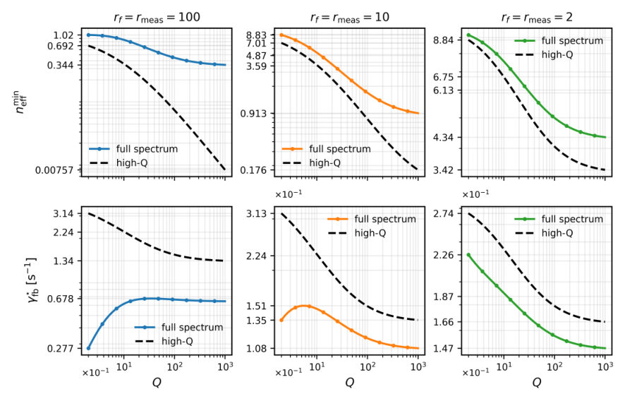
<figcaption class="paper-figure-caption"><b>Fig 5.</b> Fig. 5 Comparison of the high-Q approximation with the full-spectrum calculation at fixed derivative and measurement bandwidths. The columns correspond to rf = rmeas = 100, 10, and 2, with rf = ωf/ω0 and rmeas = ωmeas/ω0. The remaining parameters are fixed at nth = 1, η = 1, Simp xx = 10−34 m2 s, ω0 = 2 rad/s, and m = 1 kg. Top row: optimized effective occupation nmin eff as a function of the mechanical quality factor Q = ω0/(2γu). Bottom row: corresponding optimal feedback gain γ⋆ fb. Solid curves show the full-spectrum calculation and dashed curves the high-Q approximation. The com- parison shows that high mechanical Q alone is not sufficient for quantitative agreement: broad controller...</figcaption>
</figure>
</div>

<p><strong>Summary.</strong> This paper develops a comprehensive theory for controlling a harmonic oscillator using feedback derived from quantum-limited position measurements. It quantifies the fundamental trade-off between damping the oscillator's motion and amplifying measurement noise. The results provide concrete, bandwidth-dependent design rules for achieving optimal quantum cooling and sensing performance.</p>
<p><strong>Why it may be interesting.</strong> This work is highly relevant to AMO and quantum optics as it provides rigorous theoretical tools for designing quantum feedback loops, which are crucial for cooling and sensing in modern quantum technologies.</p>
<details>
<summary>Detailed structure</summary>
<p><strong>Main problem.</strong> The paper investigates the optimal measurement-based feedback control strategy for a damped harmonic oscillator, balancing the goal of mechanical stabilization against the unavoidable amplification of quantum measurement noise.</p>
<p><strong>Main result.</strong> The analysis derives an analytic design rule for optimal feedback gain, showing that achieving positive near-resonant damping requires the product of the controller cutoff and measurement bandwidth to exceed the square of the mechanical resonance frequency.</p>
<p><strong>Method.</strong> The authors use a combination of classical and quantum Langevin equations, analyzing the closed-loop displacement spectrum by separating the response into damping and noise reinjection components.</p>
<p><strong>Model / system.</strong> The system is a damped harmonic oscillator, applicable to optomechanical or interferometric sensors, subjected to feedback derived from a quantum-limited position measurement.</p>
<p><strong>Key observables.</strong> Effective occupation number ($n_{eff}$), closed-loop displacement spectrum ($S_{xx}(\omega)$), and the total force noise spectrum ($  ext{S}_{    ext{tot}}^F(\omega)$).</p>
<p><strong>Important parameters / regimes.</strong> Mechanical decay rate ($\gamma_u$), feedback gain ($\gamma_{	ext{fb}}$), controller roll-off frequency ($\omega_f$), and measurement bandwidth ($\omega_{	ext{meas}}$).</p>
<p><strong>Assumptions / limitations.</strong> The analysis relies on the imprecision–backaction constraint ($  ext{Imp} \cdot S_{ba}^F \geq \hbar^2/4\eta$) and often uses near-resonant approximations, which are shown to be dependent on bandwidths.</p>
<p><strong>Figures summary.</strong> The notes mention a dimensionless map of the gain-optimized high-Q occupation and comparisons between near-resonant and full-spectrum calculations.</p>
<p><strong>Paper structure.</strong> The paper progresses from a classical formulation to the quantum extension, deriving the closed-loop spectrum, separating damping and noise terms, establishing the necessary bandwidth conditions for damping, and concluding with an optimization map.</p>
</details>
<details>
<summary>Abstract</summary>
<p>We study measurement-based feedback control of a damped harmonic oscillator, motivated by optomechanical and interferometric position measurements, in which feedback is synthesized from a displacement measurement. For a band-limited derivative controller, the loop shapes the mechanical susceptibility and reinjects measurement noise, creating a tradeoff between stabilization and noise amplification. We present a compact classical formulation that isolates this tradeoff in the closed-loop displacement spectrum and identifies the parameters governing resonance suppression versus noise-driven actuation. We then extend the same topology to a quantum-limited position detector, enforcing the imprecision-backaction constraint and introducing finite measurement bandwidth that regularizes high-frequency noise reinjection and adds phase lag in the feedback path. In the high-$Q$ regime we obtain an analytic design rule for the optimal feedback gain at fixed controller and measurement bandwidths and compare it with full-spectrum calculations. The comparison shows that a high mechanical quality factor alone does not guarantee quantitative agreement: the accuracy of the near-resonant approximation depends strongly on the controller and measurement bandwidths. Because finite measurement bandwidth changes both the magnitude and phase of the feedback loop, the analysis separates the near-resonant damping contribution from imprecision-noise reinjection and shows that positive near-resonant feedback damping requires the product of the controller cutoff and measurement bandwidth to exceed the square of the mechanical resonance frequency. Finally, we present a dimensionless map of the gain-optimized high-$Q$ occupation and compare its predictions with full-spectrum optimization. All analytical gains evaluated in this map satisfy the full closed-loop stability criterion for these parameters.</p>
</details>
<p><sub><a href="#top">↑ back to top</a></sub></p>

<p><a id="paper-2609.13378"></a></p>
<h3 id="the-price-of-locality-maxwell-cattaneo-charge-transport-in-schwinger-keldysh-effective-field-theory"><a href="http://arxiv.org/abs/2609.13378v1">The price of locality: Maxwell-Cattaneo charge transport in Schwinger-Keldysh effective field theory</a></h3>
<p><strong>Authors:</strong> Andrea Amoretti, Matteo Anselmi, Daniel K. Brattan<br>
<strong>Type:</strong> theory · <strong>Category:</strong> statistical mechanics · <strong>PDF:</strong> <a href="https://arxiv.org/pdf/2609.13378v1">https://arxiv.org/pdf/2609.13378v1</a><br>
<strong>Analysis basis:</strong> full PDF text, analyzed in chunks
<strong>Topic relevance:</strong> 🔥 <code>Keldysh / 2PI / non-Gaussian methods</code> <strong>4/5</strong> · <code>correlated / nonlocal dissipation</code> <strong>1/5</strong> · <code>driven-dissipative phase transition</code> <strong>1/5</strong> · <code>methods for driven-dissipative</code> <strong>1/5</strong> · <code>non-equilibrium universality</code> <strong>1/5</strong></p>
<div class="figure-strip-hint">↔ Scroll figures horizontally</div>
<div class="paper-figures-scroll">
<figure class="paper-figure-card">
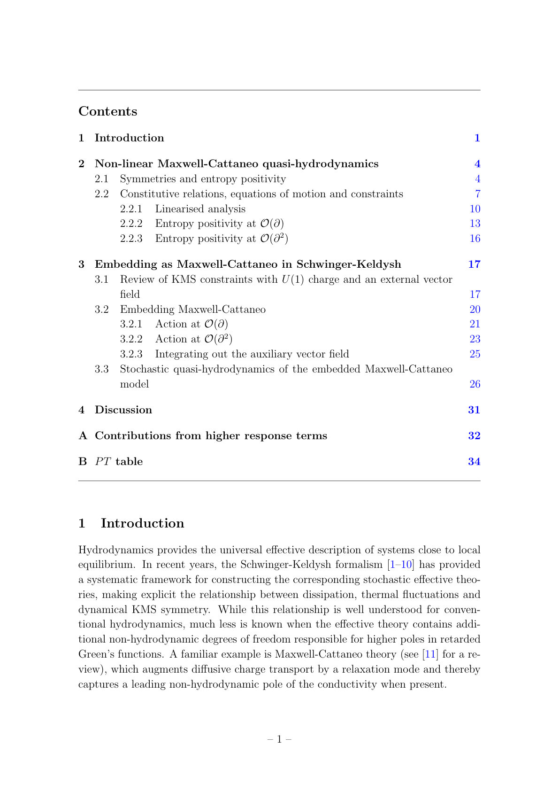
<figcaption class="paper-figure-caption"><b>Fig 1.</b> Low-resolution page preview, page 2</figcaption>
</figure>
<figure class="paper-figure-card">
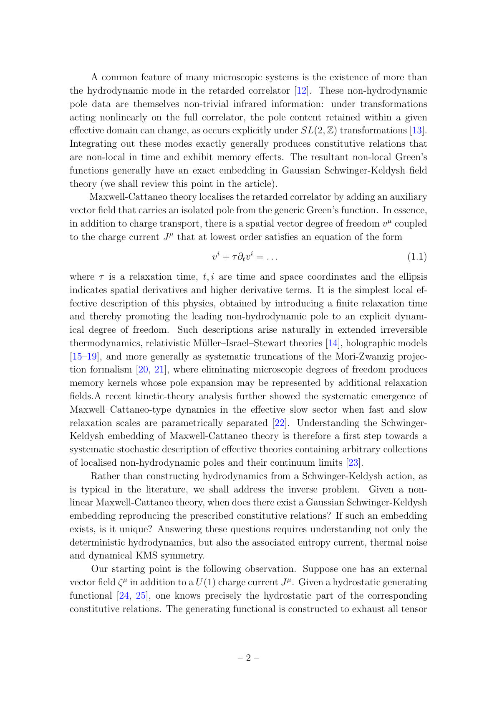
<figcaption class="paper-figure-caption"><b>Fig 2.</b> Low-resolution page preview, page 3</figcaption>
</figure>
<figure class="paper-figure-card">
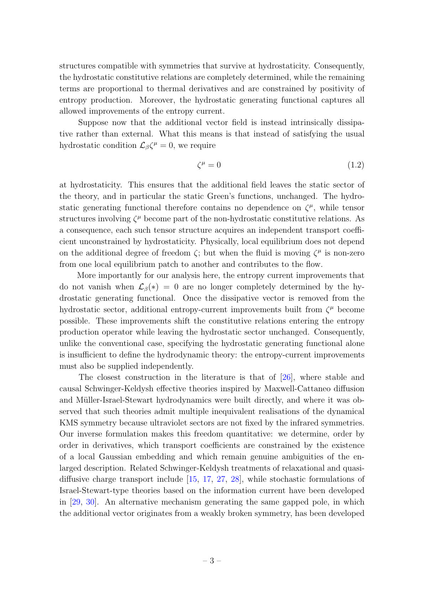
<figcaption class="paper-figure-caption"><b>Fig 3.</b> Low-resolution page preview, page 4</figcaption>
</figure>
<figure class="paper-figure-card">
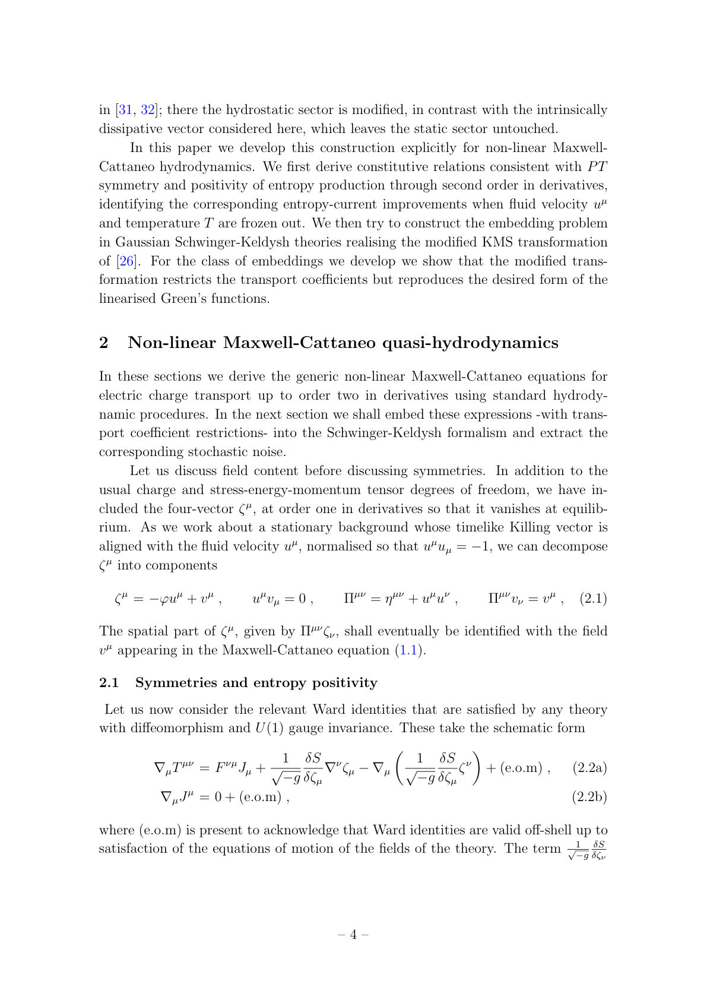
<figcaption class="paper-figure-caption"><b>Fig 4.</b> Low-resolution page preview, page 5</figcaption>
</figure>
<figure class="paper-figure-card">
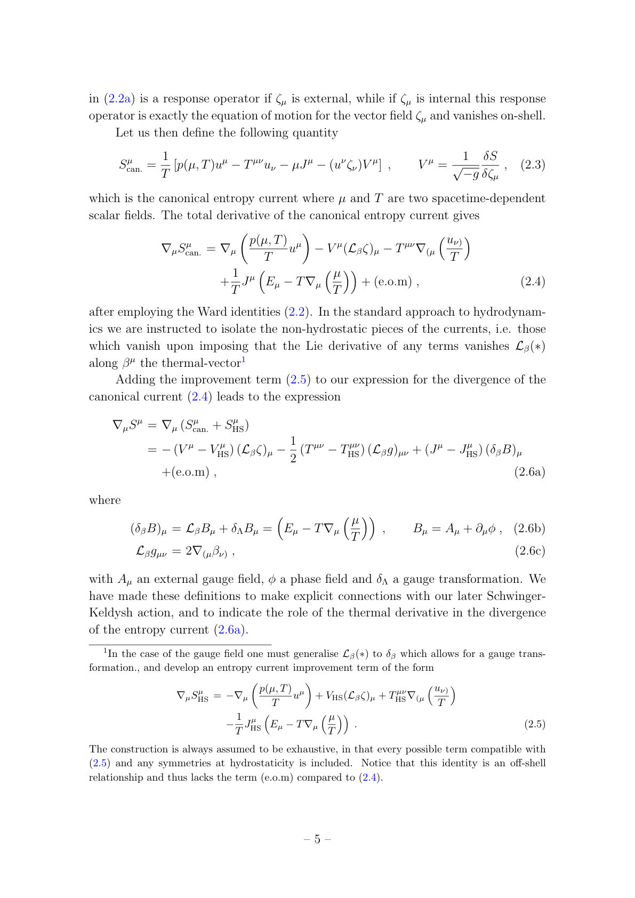
<figcaption class="paper-figure-caption"><b>Fig 5.</b> Low-resolution page preview, page 6</figcaption>
</figure>
</div>

<p><strong>Summary.</strong> This theoretical paper analyzes the consistency of describing Maxwell-Cattaneo charge transport using a Schwinger-Keldysh effective field theory. The authors find that incorporating intrinsic dissipation fundamentally changes the entropy conservation laws. By enforcing modified KMS symmetry, they derive new constraints on the transport coefficients, providing a rigorous framework for non-equilibrium quantum hydrodynamics.</p>
<p><strong>Why it may be interesting.</strong> This work connects non-equilibrium statistical mechanics (entropy production, KMS symmetry) with advanced field theory techniques (Schwinger-Keldysh) to model dissipative transport, which is crucial for understanding open quantum systems dynamics.</p>
<details>
<summary>Detailed structure</summary>
<p><strong>Main problem.</strong> The paper investigates the conditions under which the nonlinear Maxwell-Cattaneo theory of charge transport can be consistently embedded into a local Gaussian Schwinger-Keldysh effective field theory while maintaining a modified dynamical KMS symmetry.</p>
<p><strong>Main result.</strong> Treating the additional vector field as intrinsically dissipative fundamentally alters the entropy-current analysis, requiring independent supply of entropy-current improvements beyond what is fixed by the hydrostatic generating functional.</p>
<p><strong>Method.</strong> The authors employ the Schwinger-Keldysh formalism to construct stochastic effective theories, analyzing entropy current divergences and imposing constraints derived from the modified KMS transformation.</p>
<p><strong>Model / system.</strong> The system models charge transport governed by the Maxwell-Cattaneo theory, which extends standard diffusion by incorporating a relaxation mode ($\zeta_\mu$). The analysis is performed within the framework of U(1) gauge invariance and stochastic field theory.</p>
<p><strong>Key observables.</strong> The entropy current ($\mathcal{S}_\mu^{	ext{can}}$) and its divergence ($
abla_\mu S^\mu$), which must be non-negative on-shell, are key diagnostics.</p>
<p><strong>Important parameters / regimes.</strong> The relaxation time ($  au$) and the structure of the constitutive relations (e.g., Langevin canonical form parameters) are important.</p>
<p><strong>Assumptions / limitations.</strong> The analysis relies on the assumption that the modified KMS transformation is a symmetry of the action, and that field redefinitions are local and invertible.</p>
<p><strong>Figures summary.</strong> No specific figures are described, but the notes reference tables detailing discrete and intrinsic PT assignments for the enlarged field space.</p>
<p><strong>Paper structure.</strong> The paper proceeds by first establishing the entropy current analysis for the Maxwell-Cattaneo model, then deriving constitutive relations in a Langevin canonical form, and finally using KMS symmetry constraints to analyze ambiguities and ensure thermodynamic consistency.</p>
</details>
<details>
<summary>Abstract</summary>
<p>We determine the conditions under which the nonlinear Maxwell-Cattaneo theory of charge transport admits a local Gaussian Schwinger-Keldysh embedding with a particular modified dynamical KMS symmetry. We show that treating the additional vector as intrinsically dissipative fundamentally modifies the entropy-current analysis: the hydrostatic generating functional no longer fixes all entropy-current improvements, which must instead be supplied independently. Subsequently we discuss the additional constraints not contained in the hydrodynamic analysis that are imposed by the modified KMS transformation becoming a symmetry of the action. We both interpret and supply the corresponding stochastic quasi-hydrodynamics.</p>
</details>
<p><sub><a href="#top">↑ back to top</a></sub></p>

<p><a id="paper-2609.14081"></a></p>
<h3 id="broadband-purcell-filter-for-fast-superconducting-qubit-reset-and-readout"><a href="http://arxiv.org/abs/2609.14081v1">Broadband Purcell Filter for Fast Superconducting Qubit Reset and Readout</a></h3>
<p><strong>Authors:</strong> Yu Zhao, Zhixu Chen, Hanxian Liu, Mingze Liu, Zixing Liu, Hao Pang, Meiyan Wan, Changkun Wu, Liuzhu Zhong, Sai Li, Yuefeng Yuan, Yuxuan Zhou, Ji Jiang, Ji Chu, Song Liu<br>
<strong>Type:</strong> experiment · <strong>Category:</strong> quantum information and computing · <strong>PDF:</strong> <a href="https://arxiv.org/pdf/2609.14081v1">https://arxiv.org/pdf/2609.14081v1</a><br>
<strong>Analysis basis:</strong> full PDF text, analyzed in chunks
<strong>Topic relevance:</strong> 🔥 <code>QC/QI experiment</code> <strong>4/5</strong> · <code>correlated / nonlocal dissipation</code> <strong>1/5</strong> · <code>interference shaping light</code> <strong>1/5</strong> · <code>quantum measurements</code> <strong>1/5</strong></p>
<div class="figure-strip-hint">↔ Scroll figures horizontally</div>
<div class="paper-figures-scroll">
<figure class="paper-figure-card">
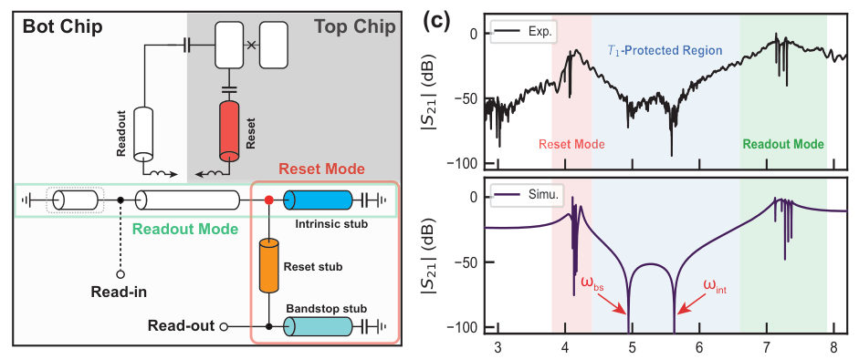
<figcaption class="paper-figure-caption"><b>Fig 1.</b> FIG. 1. Filter design. (a) False-color microscope image of the quantum processor, showing the qubit and reset resonators (red) on the top chip (gray background), while the filter and readout resonators reside on the bottom chip. (b) Distributed circuit schematic corresponding to (a), detailing the functional components of the architecture. The green border outlines the 3λ/4 coplanar waveguide that defines the readout mode, while the red border outlines the reset mode. The red dot marks the readout node. The read-in port (dashed line) near the grounded end (dashed border) has a negligible response to the filter and resonator parameters and can be omitted in reflection readout, where the...</figcaption>
</figure>
<figure class="paper-figure-card">
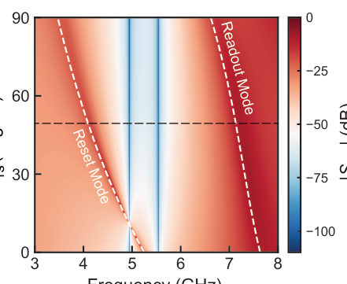
<figcaption class="paper-figure-caption"><b>Fig 2.</b> FIG. 2. Simulated transmission response |S21| of the filter versus the electrical length θrs of the reset stub. The electrical length θrs is defined at frequency ωq = 5 GHz. The white dashed lines trace the frequencies of the reset mode (left) and the readout mode (right) as functions of θrs. The horizontal dashed line marks the design parameter used in this work; the corresponding S21 response is shown in Fig. 1(c). As θrs is swept, the reset mode frequency shifts significantly more than the readout mode frequency, while the intrinsic and bandstop notch frequencies remain stable.</figcaption>
</figure>
<figure class="paper-figure-card">
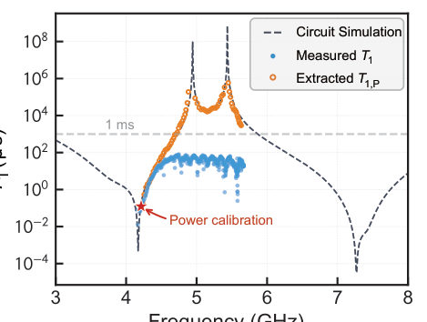
<figcaption class="paper-figure-caption"><b>Fig 3.</b> FIG. 3. Experimental characterization of T1 protec- tion. Measured relaxation time T1 of qubit Q1 (blue dots) and extracted Purcell-limited lifetime T1,P (orange circles) as a function of frequency. Some data points for T1,P are missing near the notch resonances (∼4.94 GHz and ∼5.46 GHz) due to insufficient drive strength. The black dashed line shows the theoretical prediction from circuit simulation. The cali- bration reference point is marked by a red star at 4.22 GHz.</figcaption>
</figure>
<figure class="paper-figure-card">
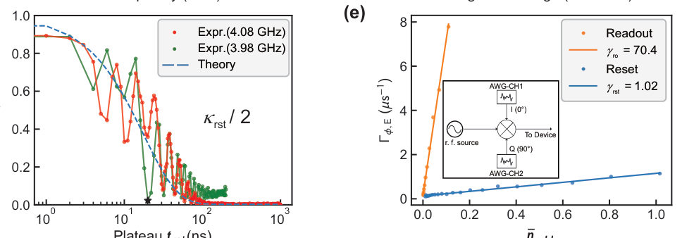
<figcaption class="paper-figure-caption"><b>Fig 4.</b> FIG. 4. Reset gate calibration and reset efficiency. (a) Pulse sequence for calibrating the reset operation. The qubit is prepared in its first excited state and then tuned into resonance with its reset resonator for a variable duration trst before measurement. (b) Measured chevron pattern for the iSWAP interaction between a qubit and its corresponding reset resonator. The pattern is tilted due to flux pulse distortion. The red dashed line indicates resonance with the reset resonator at 4.07 GHz. (c) Line cuts of (b) along the red and green dashed lines. Underdamped oscillations are observed because gq,rst &gt; κrst/4. The decay envelope of the red curve is dominated by the reset-resonator...</figcaption>
</figure>
<figure class="paper-figure-card">
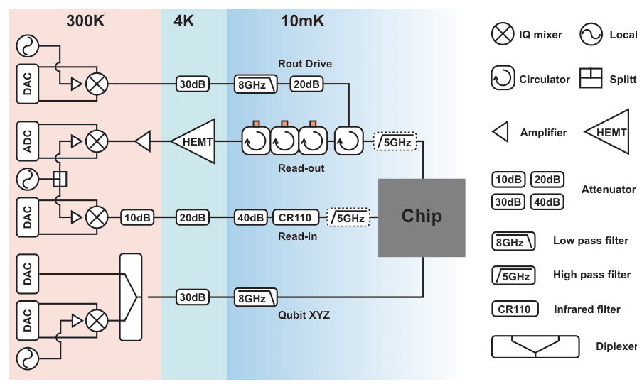
<figcaption class="paper-figure-caption"><b>Fig 5.</b> FIG. 5. Experimental setup. An additional drive line connected to the circulator in the readout chain is used to characterize the Purcell protection of the device. In other characterization experiments, drive signals are delivered to the qubits through dedicated control lines. To suppress the thermal population of the reset resonator, 5 GHz HPFs (indicated by dashed borders) are added to the read-in and readout lines during reset efficiency characterization.</figcaption>
</figure>
</div>

<p><strong>Summary.</strong> This paper presents a novel broadband Purcell filter for superconducting qubits that resolves the conflict between fast quantum operations and qubit coherence. By engineering the filter with distinct notches and a dedicated reset stub, the authors achieve coherence times over 1 ms while maintaining fast readout and reset capabilities. This provides a critical hardware advancement for scalable quantum computation.</p>
<p><strong>Why it may be interesting.</strong> This work directly addresses hardware limitations in superconducting quantum computing by providing a scalable, engineered solution to the Purcell decay problem, which is crucial for building fault-tolerant quantum processors.</p>
<details>
<summary>Detailed structure</summary>
<p><strong>Main problem.</strong> Accelerating qubit reset and readout operations for Quantum Error Correction (QEC) typically increases qubit decay via the Purcell effect, creating a fundamental trade-off.</p>
<p><strong>Main result.</strong> The authors designed a broadband Purcell filter that decouples reset and readout paths, achieving Purcell-limited coherence times exceeding 1 ms over 1.2 GHz while enabling fast (100 ns) reset and 500 ns readout.</p>
<p><strong>Method.</strong> The work involves designing and experimentally implementing a superconducting microwave filter structure incorporating intrinsic and bandstop notches, alongside dedicated reset resonators.</p>
<p><strong>Model / system.</strong> The system uses superconducting qubits coupled to a microwave filter on a flip-chip processor. The architecture utilizes engineered notches and a dedicated reset stub to create a low-frequency reset mode, allowing independent optimization of the readout and reset channels.</p>
<p><strong>Key observables.</strong> Purcell-limited relaxation time ($T_{1,P}$), readout time (500 ns), reset time (100 ns), and dephasing suppression factor (70).</p>
<p><strong>Important parameters / regimes.</strong> 1 ms coherence time over 1.2 GHz bandwidth; 99.6% reset efficiency; $\kappa-\chi$ mismatch for dephasing suppression.</p>
<p><strong>Assumptions / limitations.</strong> The primary assumption is that decoupling the reset and readout paths via engineered filter components can resolve the inherent trade-off between speed and coherence.</p>
<p><strong>Figures summary.</strong> Figures illustrate the physical layout and circuit schematic of the filter, the measured transmission spectrum showing the protected bands, and characterization plots comparing measured $T_1$ to the theoretical Purcell-limited lifetime.</p>
<p><strong>Paper structure.</strong> The paper progresses by identifying the Purcell decay problem, proposing a broadband filter architecture with decoupled reset/readout paths, detailing the experimental implementation and characterization of the filter's spectral properties, and finally presenting measurements demonstrating fast, high-fidelity operations alongside long coherence times.</p>
</details>
<details>
<summary>Abstract</summary>
<p>Rapid reset and readout of qubit states are essential for quantum error correction, yet accelerating these operations through stronger coupling to a dissipative environment inevitably increases qubit decay via the Purcell effect. Here we present a broadband Purcell filter that decouples the reset and readout paths, enabling both operations to be independently optimized without compromising qubit coherence. The filter employs two engineered notches - an intrinsic notch and a bandstop notch - to provide broadband Purcell protection, together with an additional reset stub that creates a reset mode below the protected band. To enable fast reset while suppressing filter-mediated interactions between qubits, we couple each qubit to a dedicated reset resonator. We experimentally demonstrate Purcell-limited relaxation times exceeding 1 ms across a 1.2 GHz bandwidth, simultaneously with 500 ns readout without a Josephson parametric amplifier and 100 ns reset with 99.6% efficiency. The reset resonator is designed with a deliberate kappa-chi mismatch, which suppresses photon-shot-noise-induced dephasing by a factor of 70 compared to the readout resonator. Our work provides a scalable hardware solution that resolves the traditional trade-off between fast qubit operations and qubit protection, advancing the prospects for fault-tolerant quantum computing.</p>
</details>
<p><sub><a href="#top">↑ back to top</a></sub></p>

<p><a id="paper-2609.13367"></a></p>
<h3 id="high-rate-multipartite-quantum-secret-sharing-with-composable-security"><a href="http://arxiv.org/abs/2609.13367v1">High-rate multipartite quantum secret sharing with composable security</a></h3>
<p><strong>Authors:</strong> Russell M. J. Brooks, Joseph Ho, Joseph Niblo, Janka Memmen, Anna Pappa, Jens Eisert, Nathan Walk, Alessandro Fedrizzi<br>
<strong>Type:</strong> experiment · <strong>Category:</strong> quantum information and computing · <strong>PDF:</strong> <a href="https://arxiv.org/pdf/2609.13367v1">https://arxiv.org/pdf/2609.13367v1</a><br>
<strong>Analysis basis:</strong> full PDF text, analyzed in chunks
<strong>Topic relevance:</strong> 🔥 <code>QC/QI experiment</code> <strong>4/5</strong> · <code>quantum optics experiment</code> <strong>3/5</strong></p>
<div class="figure-strip-hint">↔ Scroll figures horizontally</div>
<div class="paper-figures-scroll">
<figure class="paper-figure-card">
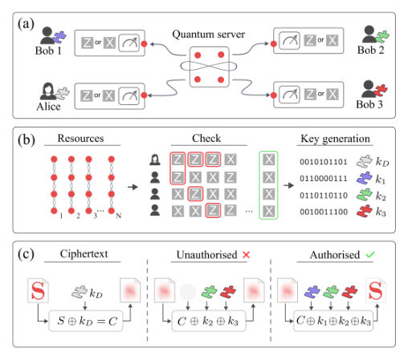
<figcaption class="paper-figure-caption"><b>Fig 1.</b> FIG. 1. Quantum secret sharing protocol. (a) Alice (dealer) re- quests a server to deliver N copies of the GHZ state to all users (Bobs) over quantum channels. Each user performs measurements in Z or X basis. (b) Once all N GHZ states are measured, the dealer performs basis reconciliation and identifies rounds in which they and at least one other user measure in the Z basis in red boxes. These check rounds are used for parameter estimation, while joint measure- ments in X are shown in the green box and are for key generation. After error correction and privacy amplification, each party obtains one share of the total secure key, labelled ki. (c) The dealer uses their share, kD to encrypt a...</figcaption>
</figure>
<figure class="paper-figure-card">
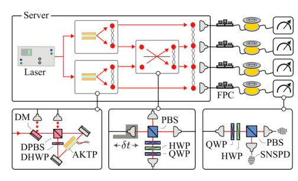
<figcaption class="paper-figure-caption"><b>Fig 2.</b> FIG. 2. Experiment setup. The quantum server uses a pulsed laser that pumps the two entangled photon pair sources. Each source uses an aperiodically-poled KTP crystal embedded in a Sagnac interfer- ometer made from a dichroic mirror (DM), dichroic polarising beam splitter (DPBS), and a dichroic half-wave plate (DHWP). One pho- ton from each source is sent to a PBS which probabilistically gener- ates the four-photon GHZ state. Each photonic qubit is sent through a fibre polarisation controller (FPC) and fibre spool to a party, who are equipped with polariser analysers and superconducting nanowire single-photon detectors (SNSPDs).</figcaption>
</figure>
<figure class="paper-figure-card">
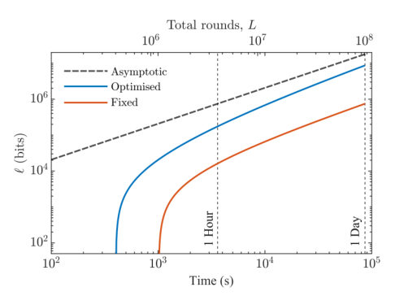
<figcaption class="paper-figure-caption"><b>Fig 3.</b> FIG. 3. Finite key analysis. Projected extractable secret-key length based on the measured 20-km error statistics and event rate as a func- tion of aggregation time up to 24 hours (bottom axis) and total rounds (top axis). The optimised secure key is calculated using the optimal key basis probability p∗ key, while the unoptimised secure key (fixed) is calculated using a constant pkey = 0.5. The asymptotic secure key is calculated using Eq. (1). A positive key is obtained after 6.5 minutes, using the optimised basis bias and 4.7 × 105 total rounds (L).</figcaption>
</figure>
<figure class="paper-figure-card">
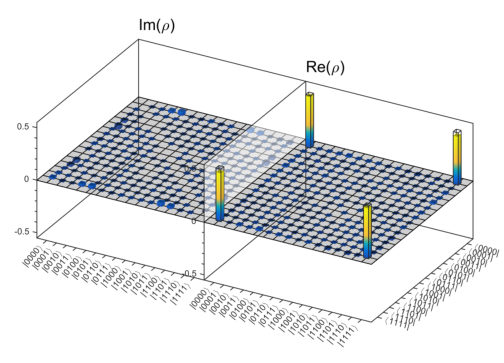
<figcaption class="paper-figure-caption"><b>Fig 4.</b> FIG. 4. Density matrix. The tomographically reconstructed density matrix of the four-qubit GHZ state prepared using 100 mW pump power and a generation rate of 112 four-folds/s. Each basis is mea- sured for 30 seconds, and we collect 3.3 × 103 rounds per basis and 2.7 × 105 rounds in total. The reconstructed density matrix has a state fidelity of 0.948 ± 0.018 with the ideal GHZ state, shown with the empty bars and a purity of 0.919 ± 0.013.</figcaption>
</figure>
<figure class="paper-figure-card">
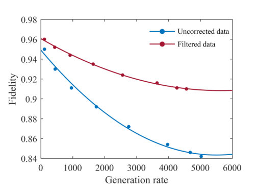
<figcaption class="paper-figure-caption"><b>Fig 5.</b> FIG. 5. GHZ characterisation. The quantum state fidelity of the experimental GHZ state is plotted against the generation rate (four- folds/s). In blue we keep all double-click events, while in red, we discard these events, see Appendix D. Each basis is measured for 30 seconds at all power levels. Error bars have been calculated and excluded due to the size.</figcaption>
</figure>
</div>

<p><strong>Summary.</strong> This paper presents an experimental demonstration of a high-rate, multipartite quantum secret sharing protocol designed to resist sophisticated participant attacks. By generating and distributing four-qubit GHZ states over a fiber network, the authors achieved a measurable secret key rate and calculated a substantial finite-key lower bound. This work advances the practical feasibility of secure quantum communication for multiple untrusted parties.</p>
<p><strong>Why it may be interesting.</strong> This work is highly relevant as it pushes the boundaries of experimental quantum networking by demonstrating high-rate, secure multi-user quantum key distribution, which is a core component of future quantum internet infrastructure.</p>
<details>
<summary>Detailed structure</summary>
<p><strong>Main problem.</strong> The paper addresses the challenge of implementing high-rate multipartite quantum secret sharing (QSS) protocols that maintain composable security, specifically overcoming vulnerabilities in canonical GHZ-based schemes to participant attacks.</p>
<p><strong>Main result.</strong> The authors experimentally demonstrated a QSS protocol achieving a high asymptotic secret key rate of $750 \pm 10$ bits per second, yielding a projected finite-key lower bound of 8.7 Mbits over 24 hours.</p>
<p><strong>Method.</strong> The protocol was experimentally evaluated using a discrete-variable (n, n)-threshold QSS scheme implemented with photonic GHZ states, followed by a finite-key analysis to quantify extractable secure key length.</p>
<p><strong>Model / system.</strong> The physical system involves generating four-qubit GHZ states using two domain-engineered entangled photon pair sources pumped by a pulsed laser via SPDC in AKTP crystals. The state is then distributed across a 4-arm star network emulating 20 km of fiber.</p>
<p><strong>Key observables.</strong> Maximum generation rate ($\approx 5025$ counts/s), asymptotic secret key rate ($750 \pm 10$ bits/s), and the finite-key lower bound (8.7 Mbits).</p>
<p><strong>Important parameters / regimes.</strong> The security analysis relies on the composable trace-distance sense ($\epsilon_{	ext{sec}}$) and involves optimizing the measurement basis probability ($p^*_{key}$).</p>
<p><strong>Assumptions / limitations.</strong> The finite-key analysis assumes that the measured source and device statistics remain stationary over the entire execution period.</p>
<p><strong>Figures summary.</strong> Figure 1 illustrates the QSS protocol steps (state distribution, basis reconciliation, key encryption). Figure 2 details the experimental setup using pulsed lasers, EPS, and fiber transmission. Figure 3 and 7 relate to the finite-key analysis and error tracking over distance.</p>
<p><strong>Paper structure.</strong> The paper details the theoretical framework for composable security in QSS, presents the experimental setup for generating and distributing GHZ states, measures key rates and error statistics, and concludes with a finite-key analysis to quantify the extractable secret key length.</p>
</details>
<details>
<summary>Abstract</summary>
<p>Future quantum communication networks will conceivably support cryptographic tasks that require entanglement among more than two users. Quantum secret sharing is a prime example where entanglement provides a direct means to coordinate untrusted parties with security from eavesdropping in a multi-party setting. However, the canonical GHZ-based protocols can be vulnerable to participant attacks, in which untrusted parties try to learn the secret without collaborating. Here, we experimentally evaluate a discrete-variable $(n,n)$-threshold quantum secret-sharing protocol whose finite-key analysis provides composable security against general attacks, including participant attacks. Using two domain-engineered entangled photon pair sources, we generate 4-qubit GHZ states at rates above $5\times10^3$ fourfold events per second and a maximum asymptotic secret key rate of $750 \pm 10$ bits per second. We then distribute the state through a 4-arm star network comprising 20km of fibre in total. From the measured event rates and error statistics, we infer that a randomised 24-hour execution with the optimised basis probability would yield a composable finite-key lower bound of 8.7 Mbits, under the assumption that the measured source and device statistics remain stationary.</p>
</details>
<p><sub><a href="#top">↑ back to top</a></sub></p>

<p><a id="paper-2609.15674"></a></p>
<h3 id="opto-electrical-detection-of-donor-bound-excitons-in-silicon-on-insulator-substrate"><a href="http://arxiv.org/abs/2609.15674v1">Opto-Electrical Detection of Donor Bound Excitons in Silicon-on-Insulator Substrate</a></h3>
<p><strong>Authors:</strong> A. Kanniainen, A. S. Kumar, A. Sammak, G. Scappucci, J. T. Muhonen<br>
<strong>Type:</strong> experiment · <strong>Category:</strong> quantum information and computing · <strong>PDF:</strong> <a href="https://arxiv.org/pdf/2609.15674v1">https://arxiv.org/pdf/2609.15674v1</a><br>
<strong>Analysis basis:</strong> full PDF text, analyzed in chunks
<strong>Topic relevance:</strong> 🔥 <code>QC/QI experiment</code> <strong>4/5</strong> · <code>analog quantum simulation</code> <strong>1/5</strong> · <code>quantum measurements</code> <strong>1/5</strong> · <code>quantum optics experiment</code> <strong>1/5</strong></p>
<div class="figure-strip-hint">↔ Scroll figures horizontally</div>
<div class="paper-figures-scroll">
<figure class="paper-figure-card">
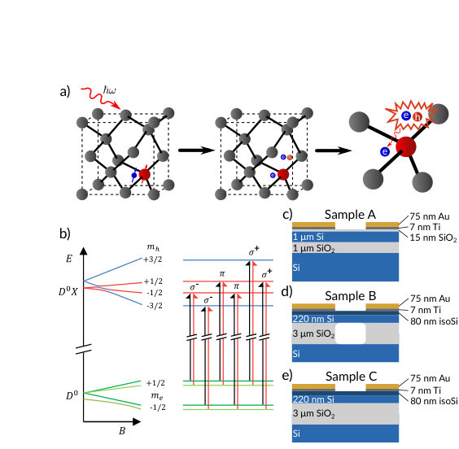
<figcaption class="paper-figure-caption"><b>Fig 1.</b> FIG. 1. (a) Schematic illustration of the bound exciton recombination process at a neutral donor (D0X) in a semiconductor lattice. A pho- ton (¯hω) creates an electron-hole pair bound to the donor site, which subsequently decays via an Auger process, ejecting a free electron into the conduction band. (b) Energy level diagram of the neutral donor bound exciton (D0X) transition as a function of magnetic field B, showing the Zeeman splitting of the hole states (mh = ±1/2, ±3/2) and electron states (me = ±1/2), with allowed optical transitions indi- cated for σ−, σ+ and π polarizations. (c) Cross-sectional schematic of Sample A, consisting of a 1 µm Si device layer on a 1 µm SiO2 buried oxide,...</figcaption>
</figure>
<figure class="paper-figure-card">
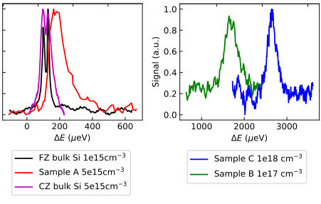
<figcaption class="paper-figure-caption"><b>Fig 2.</b> FIG. 2. Electrically detected exciton spectra for silicon samples with varying phosphorus concentrations and substrates. (a) Comparison between float-zone (FZ) and Czochralski (CZ) bulk silicon (black and purple, respectively) [13] and SOI sample A (red), showing the broadened and shifted exciton resonance peak in SOI. (b) Exciton spectra for samples B and C on a wider energy scale, illustrating the further shift and stronger linewidth broadening at these thinner de- vice layer samples with higher ion implanted doping concentrations.</figcaption>
</figure>
<figure class="paper-figure-card">
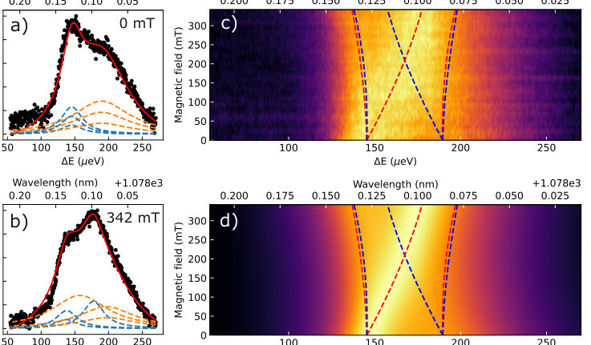
<figcaption class="paper-figure-caption"><b>Fig 3.</b> FIG. 3. (a,b) Phase response of the electrical signal as a function of laser detuning ∆E of sample A at magnetic fields of 0 mT and 342 mT, respectively. The laser detuning is set to zero at the literature value for the phosphorus donor bound exciton transition in isotopically purified 28Si at ≈1078.26 nm [7]. Red curves represent the total fit, and dashed curves indicate individual Lorentzian components associated with the exciton transitions. Blue and orange dashed curves indicate the heavy-hole and light-hole transitions. (c) Measured phase response versus magnetic field and detuning of sample A, revealing field-dependent splitting of the exciton resonances. (d) Corresponding magnetic...</figcaption>
</figure>
<figure class="paper-figure-card">
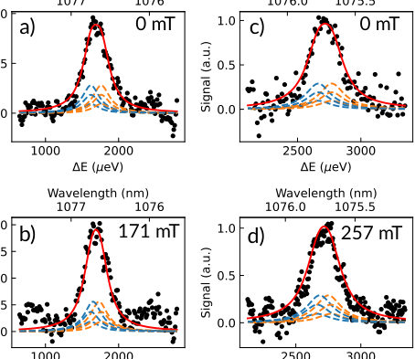
<figcaption class="paper-figure-caption"><b>Fig 4.</b> FIG. 4. Measured spectra (black points) at zero field and at finite magnetic field for sample B (a, b) and sample C (c, d), together with the fitted model (red solid line) consisting of a sum of Lorentzian components (dashed lines). Blue and orange dashed curves indicate the heavy-hole and light-hole transitions. The applied magnetic field is indicated in each panel. The spectra are fitted using the maximum shear strain consistent with the data, yielding an upper limit on the shear strain and a lower limit on the linewidth.</figcaption>
</figure>
</div>

<p><strong>Summary.</strong> This paper reports on the opto-electrical detection of donor bound excitons in silicon-on-insulator (SOI) substrates, establishing a pathway for spin readout. By measuring spectral shifts and linewidths in samples of varying thickness, the authors confirm that the spin-sensitive transition survives integration into nanoscale devices. This work is vital for advancing solid-state quantum computing platforms.</p>
<p><strong>Why it may be interesting.</strong> This work directly addresses the physical realization of solid-state qubits by demonstrating a robust, optically addressable, and electrically readable spin system in a scalable platform (SOI), which is crucial for quantum computing architectures.</p>
<details>
<summary>Detailed structure</summary>
<p><strong>Main problem.</strong> The goal is to establish a scalable opto-electrical pathway for reading out the spin state of donor electron spins in silicon, moving from bulk samples to integrated Silicon-on-Insulator (SOI) platforms.</p>
<p><strong>Main result.</strong> The donor bound exciton (D^0X) transition is successfully detected in SOI substrates, showing measurable spectral shifts and broadening compared to bulk, confirming the viability of the electrical readout mechanism in integrated devices.</p>
<p><strong>Method.</strong> The experiment uses tunable diode lasers to excite D^0X transitions in samples of varying thickness on SOI, measuring the resulting laser-induced photoconductivity change at cryogenic temperatures.</p>
<p><strong>Model / system.</strong> The system involves donor bound excitons in silicon, whose spin state is highly coherent. The analysis utilizes the Pikus-Bir Hamiltonian to model strain effects on the valence band and the Zeeman Hamiltonian for spin splitting.</p>
<p><strong>Key observables.</strong> Exciton resonance wavelength, transition linewidth ($\Gamma$), and the energy shifts caused by strain components ($\epsilon_{ij}$).</p>
<p><strong>Important parameters / regimes.</strong> Device layer thickness (e.g., $1 \mu	ext{m}$ vs. $300 	ext{ nm}$), magnetic field strength (up to $400 	ext{ mT}$), and strain tensor components.</p>
<p><strong>Assumptions / limitations.</strong> The analysis assumes that the observed spectral shifts are dominated by strain effects, and that Fabry-Pérot interference can be accurately removed via Fourier domain filtering.</p>
<p><strong>Figures summary.</strong> Figures compare exciton spectra across different silicon samples (FZ, CZ, SOI A, B, C), illustrating the spectral shifts and broadening observed in the SOI structures relative to bulk measurements.</p>
<p><strong>Paper structure.</strong> The paper progresses by first demonstrating the feasibility of the measurement on different SOI samples (A, B, C), then quantitatively analyzing the spectral shifts and linewidths to attribute them to strain, and finally detailing the Hamiltonian framework used to model the strain-dependent energy levels.</p>
</details>
<details>
<summary>Abstract</summary>
<p>Spin of a donor bound electron in silicon has been shown to be a very coherent qubit system but lacks a coherent optical interface. There does, however, exist a donor bound exciton transition that can be excited optically but decays dominantly via an Auger recombination producing an electrical signal. This provides an opto-electrical pathway for spin readout. Scaling this readout to single-spin level will require interfacing the spins with silicon photonics for efficient guiding of photons, which in turn will require moving to silicon-on-insulator (SOI) substrates. Here we demonstrate first ensemble opto-electronic measurements of donor bound excitons in SOI material, including isotopically purified 28-Si device layers. The experiments show pronounced shifts in the resonance wavelengths and broadenings of the transition linewidths compared to the bulk experiments.</p>
</details>
<p><sub><a href="#top">↑ back to top</a></sub></p>

<p><a id="paper-2609.14230"></a></p>
<h3 id="an-all-van-der-waals-qubit"><a href="http://arxiv.org/abs/2609.14230v1">An All-van-der-Waals Qubit</a></h3>
<p><strong>Authors:</strong> Sein Park, Sameia Zaman, Junghyun Kim, Junyoung An, Daniel Rodan-Legrain, Hung-Yu Tsao, Chia-Chin Tsai, Aranya Goswami, Réouven Assouly, William P. Banner, Gabriel D. Cutter, Kenji Watanabe, Takashi Taniguchi, Terry P. Orlando, Gil-Ho Lee, Kyle Serniak, Max Hays, Jeffrey A. Grover, Philip Kim, Pablo Jarillo-Herrero, Joel Î-j. Wang, William D. Oliver<br>
<strong>Type:</strong> experiment · <strong>Category:</strong> quantum information and computing · <strong>PDF:</strong> <a href="https://arxiv.org/pdf/2609.14230v1">https://arxiv.org/pdf/2609.14230v1</a><br>
<strong>Analysis basis:</strong> full PDF text, analyzed in chunks
<strong>Topic relevance:</strong> 🔥 <code>QC/QI experiment</code> <strong>4/5</strong> · <code>quantum measurements</code> <strong>1/5</strong> · <code>quantum optics experiment</code> <strong>1/5</strong></p>
<div class="figure-strip-hint">↔ Scroll figures horizontally</div>
<div class="paper-figures-scroll">
<figure class="paper-figure-card">
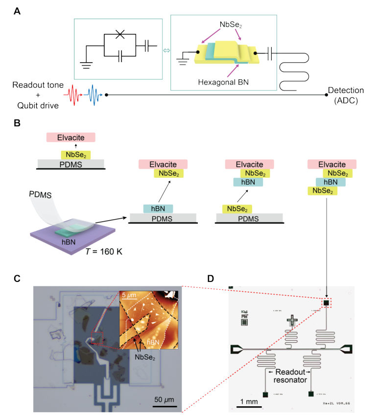
<figcaption class="paper-figure-caption"><b>Fig 1.</b> Figure 1: Fabrication and circuit layout of an all-vdW, merged-element transmon qubit. (A)</figcaption>
</figure>
<figure class="paper-figure-card">
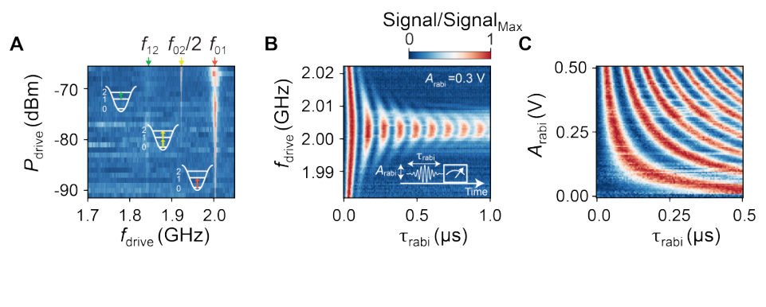
<figcaption class="paper-figure-caption"><b>Fig 2.</b> Figure 2: Qubit spectroscopy and coherent control of the all-vdW merged-element transmon</figcaption>
</figure>
<figure class="paper-figure-card">
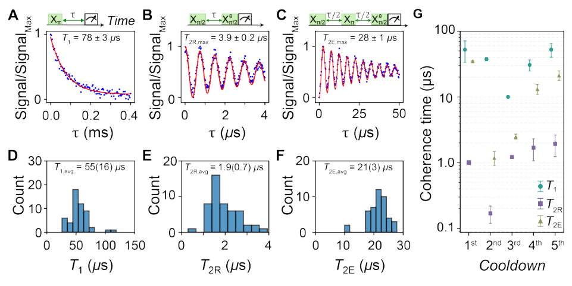
<figcaption class="paper-figure-caption"><b>Fig 3.</b> Figure 3: Qubit coherence properties. (A) The relaxation time 𝑇1 is extracted from an exponential</figcaption>
</figure>
<figure class="paper-figure-card">
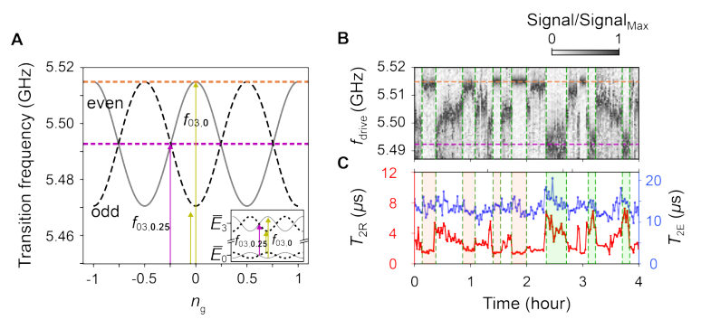
<figcaption class="paper-figure-caption"><b>Fig 4.</b> Figure 4: Offset-charge dependence of qubit transition frequency in an all-vdW transmon</figcaption>
</figure>
</div>

<p><strong>Summary.</strong> This paper reports on the realization and characterization of an all-van-der-Waals superconducting qubit using a NbSe2-hBN-NbSe2 junction. By employing cQED techniques, the authors measured coherence times comparable to established superconducting qubits. The work is significant because it proves that vdW heterostructures can form compact, high-performance qubits for quantum information processing.</p>
<p><strong>Why it may be interesting.</strong> This work directly addresses the hardware challenge in quantum computing by demonstrating a viable, scalable material platform (vdW heterostructures) for superconducting qubits, which is highly relevant to open quantum systems research.</p>
<details>
<summary>Detailed structure</summary>
<p><strong>Main problem.</strong> The primary goal is to develop superconducting qubits using van der Waals (vdW) materials to create compact, low-loss, and scalable quantum devices.</p>
<p><strong>Main result.</strong> The all-vdW qubit achieved coherence times comparable to conventional Al-AlOx-Al qubits while offering a reduced device footprint due to the merged-element geometry.</p>
<p><strong>Method.</strong> The study employed circuit quantum electrodynamics (cQED) techniques, including spectroscopy, Rabi oscillations, and Ramsey/Hahn-echo measurements, to characterize the qubit performance.</p>
<p><strong>Model / system.</strong> The system is an all-vdW superconducting qubit based on a NbSe2-hBN-NbSe2 junction, modeled using the Cooper-pair-box Hamiltonian. The hBN layer acts as both the Josephson coupler and the shunt capacitor.</p>
<p><strong>Key observables.</strong> Average energy-relaxation time ($T_{1,\mathrm{avg}} = 55 \mu	ext{s}$), Hahn-echo coherence time ($T_{2\mathrm{E},\mathrm{avg}} = 21 \mu	ext{s}$), and Ramsey coherence time ($T_{2\mathrm{R},\mathrm{avg}} = 1.9 \mu	ext{s}$).</p>
<p><strong>Important parameters / regimes.</strong> Josephson energy ($E_J/h = 4.29 	ext{ GHz}$), Charging energy ($E_C/h = 0.13 	ext{ GHz}$), and the ratio $E_J/E_C \approx 33$.</p>
<p><strong>Assumptions / limitations.</strong> The relatively low Ramsey time is attributed to enhanced sensitivity to charge noise rather than being a fundamental limitation of the platform.</p>
<p><strong>Figures summary.</strong> Figure 1 details the fabrication process and circuit layout. Figure 2 presents spectroscopy and Rabi oscillation measurements used for characterization.</p>
<p><strong>Paper structure.</strong> The paper details the fabrication of the all-vdW qubit, characterizes its superconducting parameters using cQED techniques, measures key coherence times ($T_1, T_2$), and analyzes the sources of dephasing limitations.</p>
</details>
<details>
<summary>Abstract</summary>
<p>Advances in solid-state physics, materials science, and device engineering have accelerated the development of superconducting qubits. Among emerging platforms, van der Waals (vdW) materials and their heterostructures are potentially attractive building blocks for quantum devices, yet their realization in qubit architectures remains largely underexplored. Here we report an all-vdW superconducting qubit based on a NbSe$_2$-hBN-NbSe$_2$ junction, in which a thin hBN layer simultaneously provides Josephson coupling and capacitive shunting between two NbSe$_2$ islands, forming a "merged-element" transmon. Temporal characterization using circuit quantum electrodynamics (cQED) techniques yields an average energy-relaxation time $T_{1,\mathrm{avg}} = 55 ~μs$, Hahn-echo coherence time $T_{2\mathrm{E},\mathrm{avg}} = 21 ~μs$, and Ramsey coherence time $T_{2\mathrm{R},\mathrm{avg}} = 1.9~μs$. The relatively low Ramsey time is primarily attributable to an enhanced sensitivity to charge noise consistent with the realized device parameters and not a fundamental limitation. These results show that lumped-element superconducting qubits based on vdW heterostructures can achieve coherence times comparable to those of conventional Al-AlO$_\mathrm{x}$-Al qubits, while offering a reduced device footprint and suppressed stray capacitive coupling.</p>
</details>
<p><sub><a href="#top">↑ back to top</a></sub></p>

<p><a id="paper-2609.14937"></a></p>
<h3 id="entanglement-free-metrology-exploiting-multimode-hong-ou-mandel-sensor-advantage"><a href="http://arxiv.org/abs/2609.14937v1">Entanglement free Metrology Exploiting Multimode Hong Ou Mandel Sensor Advantage</a></h3>
<p><strong>Authors:</strong> Qian Li, Jianning Han<br>
<strong>Type:</strong> theory · <strong>Category:</strong> quantum information and computing · <strong>PDF:</strong> <a href="https://arxiv.org/pdf/2609.14937v1">https://arxiv.org/pdf/2609.14937v1</a><br>
<strong>Analysis basis:</strong> full PDF text, analyzed in chunks
<strong>Topic relevance:</strong> 🔥 <code>interference shaping light</code> <strong>4/5</strong> · <code>quantum measurements</code> <strong>2/5</strong></p>
<div class="figure-strip-hint">↔ Scroll figures horizontally</div>
<div class="paper-figures-scroll">
<figure class="paper-figure-card">
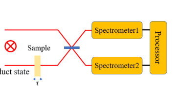
<figcaption class="paper-figure-caption"><b>Fig 1.</b> Fig. 1a. The scheme of the HOM sensor interferometer with entangled state input. Fig. 1b. The scheme of the HOM sensor interferometer with product state input.</figcaption>
</figure>
<figure class="paper-figure-card">
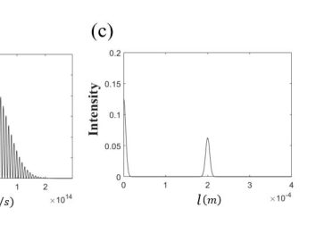
<figcaption class="paper-figure-caption"><b>Fig 2.</b> Fig. 2. Simulation results based on frequency product state and spectral correlation measurements. (a), Simulated spectral correlation map 𝑃𝑐(𝜔, 𝜔′). The yellow dashed line indicates the anti-diagonal selection ( 𝜔= 𝜔0 + 𝛺, 𝜔′ = 𝜔0 −𝛺). (b), Post-selected intensity along the anti-diagonal as a function of frequency detuning 𝛺. (c), Fourier transform result of Fig. 2b in the spatial domain. Two peaks appear at 0 μm and 200 μm, where the second peak determines the sample thickness.</figcaption>
</figure>
<figure class="paper-figure-card">
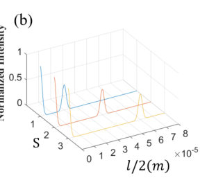
<figcaption class="paper-figure-caption"><b>Fig 3.</b> Fig. 3a. Simulation results of classical first order low coherence interferometry. The peak width broadens as the sample thickness increases due to dispersion. b. Simulation results of the product state with post selection scheme. The peak width remains unaffected by sample dispersion, exhibiting the same dispersion robustness as entangled HOM interference.</figcaption>
</figure>
<figure class="paper-figure-card">
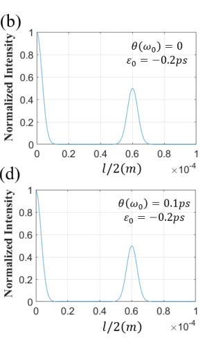
<figcaption class="paper-figure-caption"><b>Fig 4.</b> Fig. 4. Simulation results of the product state with post selection scheme under different noise conditions. a, 𝜀0 = 0, 𝜃(𝜔0) = 0. b, 𝜀0 = −0.2𝑝𝑠, 𝜃(𝜔0) = 0. c, 𝜀0 = 0, 𝜃(𝜔0) = 0.1𝑝𝑠. d, 𝜀0 = −0.2𝑝𝑠, 𝜃(𝜔0) = 0.1𝑝𝑠.</figcaption>
</figure>
</div>

<p><strong>Summary.</strong> This paper shows that the superior performance of Hong-Ou-Mandel (HOM) interferometry, typically associated with quantum entanglement, can be achieved using simple frequency product states. By employing post-selection measurements, the authors demonstrate that the essential resource is effective frequency anti-correlation, not entanglement itself. This offers a more practical physical mechanism for high-precision quantum sensing.</p>
<p><strong>Why it may be interesting.</strong> This work provides a crucial theoretical insight into the necessary quantum resources for high-precision sensing, suggesting that spectral correlations alone can mimic entanglement-enhanced performance in specific physical setups.</p>
<details>
<summary>Detailed structure</summary>
<p><strong>Main problem.</strong> To demonstrate that the metrological advantages of Hong-Ou-Mandel (HOM) interference can be achieved without relying on quantum entanglement.</p>
<p><strong>Main result.</strong> The key metrological advantages (dispersion cancellation, wide dynamic range) are reproduced using frequency product states and post-selection, showing the resource is effective frequency anti-correlation, not entanglement.</p>
<p><strong>Method.</strong> The authors compare the coincidence probability derived from entangled states versus product states, utilizing post-selection measurements and analyzing the resulting Fisher Information.</p>
<p><strong>Model / system.</strong> The system involves Hong-Ou-Mandel (HOM) interference measurements using either spectrally entangled biphoton states (from SPDC) or frequency product states as the input probe.</p>
<p><strong>Key observables.</strong> Coincidence probability $P_c(\omega, \omega')$, Quantum Fisher Information ($F_Q$), and Classical Fisher Information ($F_{cl,post}$).</p>
<p><strong>Important parameters / regimes.</strong> Spectral width ($\sigma$), sample delay ($   au$), and dispersion coefficients ($eta_2$).</p>
<p><strong>Assumptions / limitations.</strong> The method relies on post-selection to extract anti-diagonal components, and the analysis of noise uses first-order phase noise approximations.</p>
<p><strong>Figures summary.</strong> Figures simulate the spectral correlation map $P_c(\omega, \omega')$ showing the anti-diagonal selection line, and the resulting Fourier transform in the spatial domain, confirming the reproduction of the HOM interference pattern.</p>
<p><strong>Paper structure.</strong> The paper first introduces the conventional entangled HOM scheme, then proposes and analyzes the product-state scheme, demonstrating the reproduction of key features like peak narrowing and dispersion robustness, and finally compares the ultimate precision limits using Fisher Information.</p>
</details>
<details>
<summary>Abstract</summary>
<p>The Hong-Ou-Mandel (HOM) interference in the multimode frequency domain has been widely used in precision metrology, benefiting from robustness against dispersion and phase noise, as well as a large dynamic range and compatibility with fragile samples. Conventional multimode HOM metrology exploits frequency-entangled states, which naturally satisfy bosonic exchange symmetry under any centered symmetric joint spectral distribution, to provide these advantages. However, these entangled states are typically generated via spontaneous parametric down-conversion (SPDC), requiring strong pump lasers that hinder practical implementation. In this paper, we employ frequency product states, which do not possess entanglement or path-mode exchange symmetry, as the probe state and post-select measurement outcomes exhibiting frequency anti-correlation. Our results demonstrate that these metrological advantages arise neither from entanglement nor from bosonic exchange symmetry, but rather from spectral anti-correlation</p>
</details>
<p><sub><a href="#top">↑ back to top</a></sub></p>

<p><a id="paper-2609.15860"></a></p>
<h3 id="probing-residual-noise-at-a-decoherence-sweet-spot-in-a-math180mathsisige-spin-qubit"><a href="http://arxiv.org/abs/2609.15860v1">Probing Residual Noise at a Decoherence Sweet Spot in a $^{28}$Si/SiGe Spin Qubit</a></h3>
<p><strong>Authors:</strong> Shinwoo Lee, Hanseo Sohn, Jaemin Park, Hyeongyu Jang, Jonginn Yun, Jun Yoneda, Lucas E. A. Stehouwer, Davide Degli Esposti, Giordano Scappucci, Dohun Kim<br>
<strong>Type:</strong> experiment · <strong>Category:</strong> quantum information and computing · <strong>PDF:</strong> <a href="https://arxiv.org/pdf/2609.15860v1">https://arxiv.org/pdf/2609.15860v1</a><br>
<strong>Analysis basis:</strong> full PDF text, analyzed in chunks
<strong>Topic relevance:</strong> 🔥 <code>QC/QI experiment</code> <strong>4/5</strong> · <code>correlated / nonlocal dissipation</code> <strong>1/5</strong> · <code>quantum measurements</code> <strong>1/5</strong></p>
<div class="figure-strip-hint">↔ Scroll figures horizontally</div>
<div class="paper-figures-scroll">
<figure class="paper-figure-card">
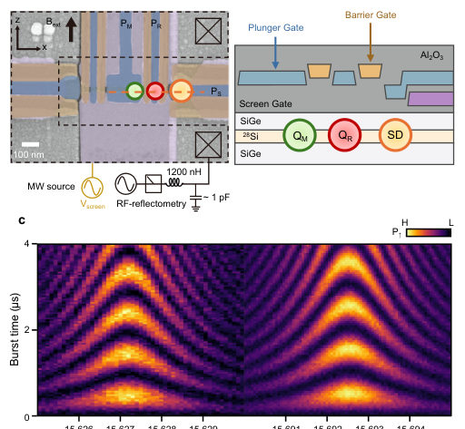
<figcaption class="paper-figure-caption"><b>Fig 1.</b> FIG. 1. Schematic of the 28Si quantum dot device used in this experiment. False-color scanning electron micrograph (a) and cross-sectional view of the device (b). Three overlapping gate layers are fabricated on an isotopically enriched 28Si/SiGe het- erostructure. The first (purple), second (blue), and third (or- ange) layers define the screen, plunger, and barrier gates for the qubit array and the sensor dot (SD), respectively. We in- vestigate the rightmost quantum dot (QR; red circle beneath the right plunger gate, PR) and the central quantum dot (QM; green circle beneath the middle plunger gate, PM). The larger orange circle represents the SD, used for charge detection via RF...</figcaption>
</figure>
<figure class="paper-figure-card">
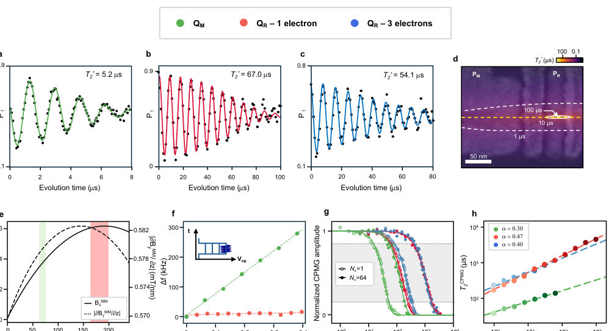
<figcaption class="paper-figure-caption"><b>Fig 2.</b> FIG. 2. Coherence of the two qubits. (a-c) Representative Ramsey measurements obtained under three operating conditions. The qubit QM in (a), operated away from the sweet spot, exhibits a shorter T ∗ 2 than QR at the sweet spot in (b) and (c). Each point represents an average over 500 repetitions. (d) Simulated T ∗ 2 map calculated from the micromagnet stray field, showing a sweet spot beneath gate PR. Dashed contours indicate calculated coherence times, and the dashed yellow horizontal line indicates the line cut used in (e). (e) Calculated z-component of the micromagnet field, BMM z (left axis, solid line), and the transverse driving gradient |∂BMM y /∂z| (right axis, dashed line), along...</figcaption>
</figure>
<figure class="paper-figure-card">
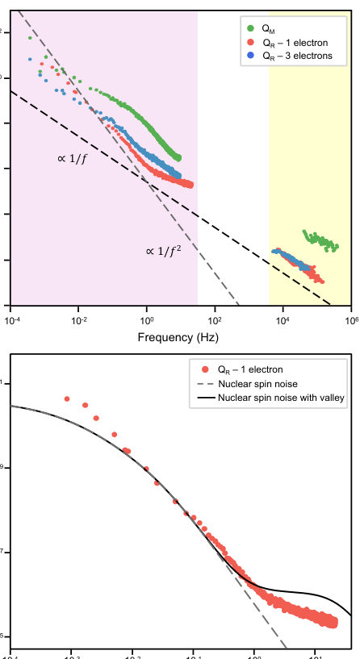
<figcaption class="paper-figure-caption"><b>Fig 3.</b> FIG. 3. PSD of the two qubits. (a) PSD extracted from re- peated Ramsey measurements based on Bayesian estimation (purple region) and CPMG measurements (yellow region). Narrow peaks from the measurement setup and their aliases are excluded. Black and gray dashed lines indicate reference slopes proportional to 1/f and 1/f 2. (b) PSD of QR in the single-electron regime (red). The gray dashed line shows the 29Si nuclear spin noise prediction without valley modulation, and the black solid line shows the same prediction with valley modulation.</figcaption>
</figure>
<figure class="paper-figure-card">
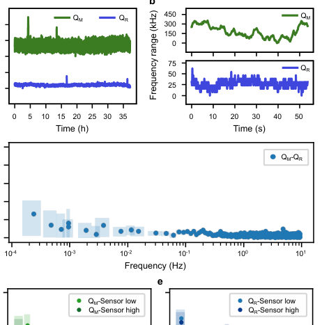
<figcaption class="paper-figure-caption"><b>Fig 4.</b> FIG. 4. Qubit frequencies and cross-correlation strength. (a) Time traces of estimated qubit frequencies, simultaneously measured for qubits QM and QR. QR, operating at the de- coherence gradient sweet spot, exhibits markedly narrower frequency fluctuations than QM. (b) Frequency-fluctuation ranges for the two qubits, extracted over a representative time window in (a). The fluctuation range of QM is approximately 6 times wider than that of QR. (c) Correlation strength be- tween qubits QM and QR. Despite being nearest-neighbor qubits, the data show overall low correlation across the fre- quency range. (d, e) Correlation strengths between the sensor signal and qubits QM and QR. The...</figcaption>
</figure>
<figure class="paper-figure-card">
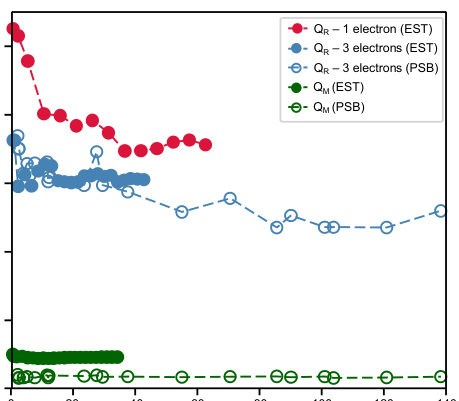
<figcaption class="paper-figure-caption"><b>Fig 5.</b> FIG. 5. Ramsey dephasing time T ∗ 2 as a function of acquisi- tion time tacq for QR and QM. Red markers show QR in the single-electron regime with EST readout. Blue markers show QR in the three-electron regime (filled for EST and open for PSB). Green markers show QM (filled for EST and open for PSB). For every data set, T ∗ 2 decreases as tacq increases be- cause a longer acquisition lowers the effective low-frequency cutoff 1/tacq and admits more low-frequency noise into the measured frequency variance.</figcaption>
</figure>
</div>

<p><strong>Summary.</strong> This experiment investigates noise limitations in Si/SiGe spin qubits by comparing coherence at a specially engineered 'decoherence sweet spot' versus a neighboring site. By minimizing the coupling between charge noise and qubit frequency, the researchers achieved significantly longer coherence times. The residual noise spectrum at the sweet spot strongly matches theoretical predictions for $^{29}	ext{Si}$ nuclear spin noise, confirming the effectiveness of sweet-spot operation.</p>
<p><strong>Why it may be interesting.</strong> This work provides crucial experimental validation of noise mitigation techniques in solid-state qubits, demonstrating how engineering the physical environment (finding a sweet spot) can suppress environmental coupling mechanisms, which is vital for scaling quantum processors.</p>
<details>
<summary>Detailed structure</summary>
<p><strong>Main problem.</strong> The study aims to characterize and mitigate residual noise sources that limit the coherence time of electron spin qubits in Si/SiGe heterostructures.</p>
<p><strong>Main result.</strong> Operating the qubit at a 'decoherence sweet spot' significantly suppresses the coupling between charge noise and qubit frequency noise, bringing residual noise levels close to the fundamental limit set by $^{29}	ext{Si}$ nuclear spin fluctuations.</p>
<p><strong>Method.</strong> Coherence times ($T_2^*$, $T_2^{	ext{CPMG}}$) and noise power spectral densities (PSDs) are measured by comparing qubits at different locations relative to the local electric field gradient.</p>
<p><strong>Model / system.</strong> The system uses electron spin qubits in $^{28}	ext{Si/SiGe}$ quantum dots, where coherence is limited by the transduction of charge noise via the local stray field gradient. The analysis compares measurements at a sweet spot (low gradient) versus a neighboring site (high gradient).</p>
<p><strong>Key observables.</strong> Coherence times ($T_2^*$, $T_2^{	ext{CPMG}}$), Frequency Noise Power Spectral Density $S(f)$, and Qubit-sensor cross-correlation strength $r_i(f)$.</p>
<p><strong>Important parameters / regimes.</strong> Residual $^{29}	ext{Si}$ concentration ($\approx 800$ ppm), Sweet Spot condition (minimal field gradient), and frequency noise spectral shape ($1/f^2$ decay).</p>
<p><strong>Assumptions / limitations.</strong> The noise analysis often relies on approximations for noise extraction from CPMG sequences and the assumption of mutual uncorrelation between different noise sources for cross-correlation analysis.</p>
<p><strong>Figures summary.</strong> Figures illustrate the comparison of coherence times and noise spectra between qubits at different gradient regimes, showing the dramatic improvement at the sweet spot and matching the predicted nuclear spin noise spectrum.</p>
<p><strong>Paper structure.</strong> The paper systematically compares coherence measurements (Ramsey/CPMG) between two neighboring qubits, quantifies the reduction in noise susceptibility at the sweet spot, and finally performs detailed noise spectroscopy to identify the residual noise source as $^{29}	ext{Si}$ nuclear spin fluctuations.</p>
</details>
<details>
<summary>Abstract</summary>
<p>In $^{28}$Si/SiGe spin qubits with micromagnets, the longitudinal stray field gradient transduces charge noise into qubit frequency noise and limits coherence. We compare two neighboring qubits in the same device with 800 ppm residual $^{29}$Si, one near a decoherence sweet spot where the gradient is locally minimized and the other at a position with a larger gradient. At the sweet spot, $T_2^*$ reaches 67 $μ\mathrm{s}$ and the Carr-Purcell-Meiboom-Gill coherence time reaches 4.6 ms, whereas $T_2^*$ is 5.2 $μ\mathrm{s}$ at the neighboring qubit. Near 1 Hz, the frequency noise power spectral density at the sweet spot is nearly two orders of magnitude lower than at the neighboring qubit. The magnitude and low-frequency decay of the residual spectrum are compatible with the prediction for $^{29}$Si nuclear spin noise, and the weak interqubit correlation indicates that local noise becomes important for dephasing at the sweet spot. Despite a finite correlation with the charge sensor, sweet-spot operation strongly reduced the transduction of charge noise, bringing the residual frequency noise close to the level predicted for $^{29}$Si nuclear spin fluctuations.</p>
</details>
<p><sub><a href="#top">↑ back to top</a></sub></p>

<p><a id="paper-2609.15604"></a></p>
<h3 id="parametric-two-qubit-gates-via-landau-zener-interference"><a href="http://arxiv.org/abs/2609.15604v1">Parametric two-qubit gates via Landau-Zener interference</a></h3>
<p><strong>Authors:</strong> Simon Geisert, Albert Hertel, Soeren Ihssen, Zhongyi Jiang, Paul Kugler, Nicolas Zapata, Nicolas Gosling, Ameya Nambisan, Yuan Gao, Asier Galicia, Jéferson R. Guimarães, Yorgo Haddad, Marc Neis, Harsh Bhardwaj, Dmitriy A. Volkov, Juan Cereijo, Marcello Guardascione, Yebin Liu, Markus Jerger, Pavel Bushev, Frank Wilhelm-Mauch, Wolfgang Wernsdorfer, Shai Machnes, Mohammad Ansari, Rami Barends, Ioan M. Pop<br>
<strong>Type:</strong> both · <strong>Category:</strong> quantum information and computing · <strong>PDF:</strong> <a href="https://arxiv.org/pdf/2609.15604v1">https://arxiv.org/pdf/2609.15604v1</a><br>
<strong>Analysis basis:</strong> full PDF text, analyzed in chunks
<strong>Topic relevance:</strong> 🔥 <code>QC/QI experiment</code> <strong>4/5</strong> · <code>interference shaping light</code> <strong>1/5</strong></p>
<div class="figure-strip-hint">↔ Scroll figures horizontally</div>
<div class="paper-figures-scroll">
<figure class="paper-figure-card">
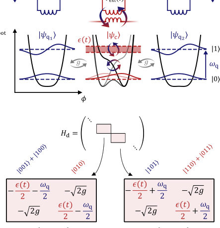
<figcaption class="paper-figure-caption"><b>Fig 1.</b> Figure 1. Coupled qubit array. a) Array of three capac- itively coupled generalized flux qubits ([1, 2, 46]) with out- ermost data qubits (blue) and fast-flux tunable coupler (red) in the center. b) Potential energy versus superconducting phase differences ϕ across the junctions. The external mag- netic flux threading the qubit loops is biased to Φext = Φ0/2, resulting in even and odd wavefunctions for the ground and excited states separated at frequency ωq. The coupler wave- function and detuning ϵ(t) = ωc(t)−ωq adiabatically follows the flux modulation Φext(t). c) The Hamiltonian Hd contains two blocks (light red) that each describe independent avoided level crossings between the bright...</figcaption>
</figure>
<figure class="paper-figure-card">
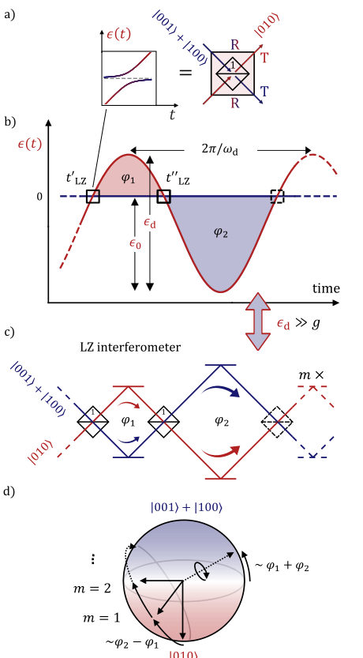
<figcaption class="paper-figure-caption"><b>Fig 2.</b> Figure 2. Landau-Zener interferometer. a) Sweeping the coupler frequency (red) through the data qubit frequency (blue) yields LZ transitions between the bright states which are modeled as beam splitters with reflection and transmis- sion coefficients R and T. The antisymmetric dark state is decoupled and depicted as a gray dashed line. b) Upon peri- odic modulation of the coupler frequency with period 2π/ωd, strength ϵd and offset ϵ0, consecutive LZ transitions and time intervals of free phase evolution can be identified. The LZ transitions are highlighted as black rectangles. The red and blue shaded areas highlight the acquired relative phases φ1 and φ2. c) In analogy to the Mach-Zehnder...</figcaption>
</figure>
<figure class="paper-figure-card">
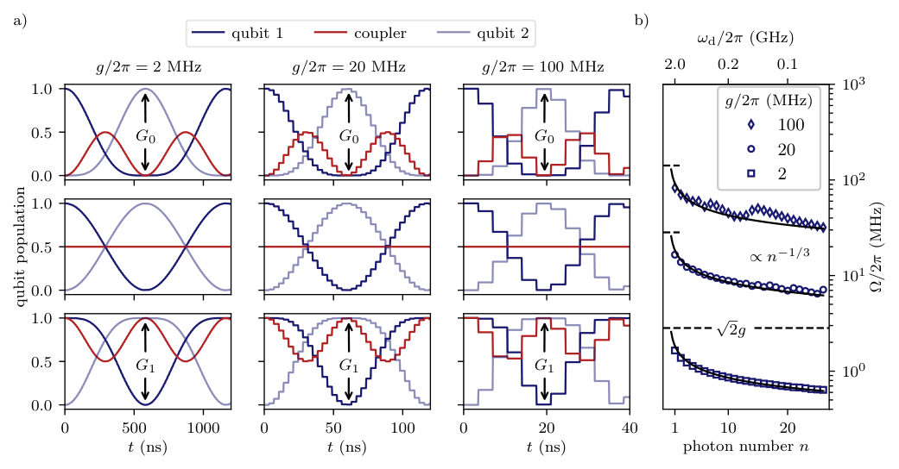
<figcaption class="paper-figure-caption"><b>Fig 3.</b> Figure 3. Simulated population oscillations in the LZ interferometer. a) Coherent population oscillations from qubit 1 (dark blue) to qubit 2 (light blue) via the coupler (red) are plotted for three different coupling strengths g (columns). The coupler initial state is varied from row to row, resulting in different oscillation patterns, but consistent population swap periods. The parameters used in the simulation are ωq/2π = 5 GHz, ϵ0/2π = 2 GHz and n = ϵ0/ωd = 7. The oscillations become more step-like for increasing g/ωd. b) The data qubit oscillation frequency Ωis plotted versus photon number n (bottom x-axis) and the corresponding drive frequency ωd (top x-axis) for the three different...</figcaption>
</figure>
<figure class="paper-figure-card">
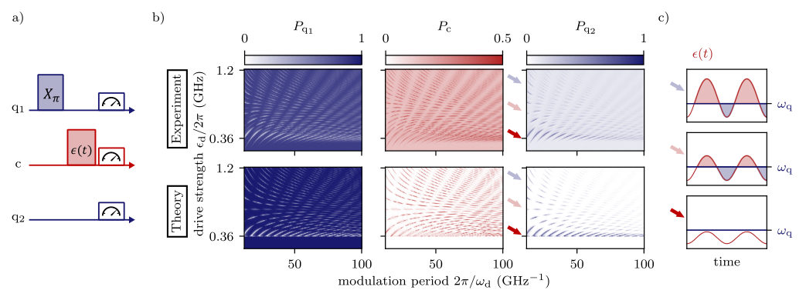
<figcaption class="paper-figure-caption"><b>Fig 4.</b> Figure 4. Three-qubit interferometric population transfer. a) The pulse sequence for the demonstration of population transfer starts with a π-pulse on qubit 1 with subsequent coupler flux modulation ϵ(t) (red). Finally, qubits and coupler are measured simultaneously on separate readout lines. b) The experimental results for a parameter sweep of the inverse drive frequency (modulation period) 2π/ωd (x-axis) and the drive strength ϵd (y-axis) in the first row are compared to the theoretical predictions (cf. Eq. 7) in the second row. The data qubit inversion is plotted in blue and the coupler inversion in red. Population is transferred from qubit 1 to the coupler and qubit 2, following a...</figcaption>
</figure>
<figure class="paper-figure-card">
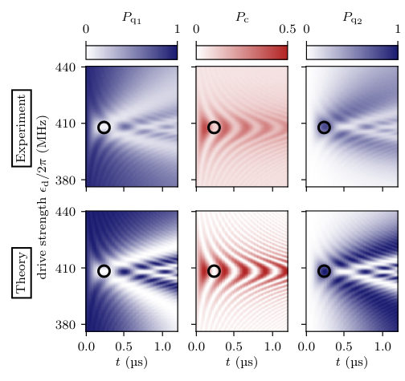
<figcaption class="paper-figure-caption"><b>Fig 5.</b> Figure 5. Population oscillations via LZ interference. Measured population oscillations between the data qubits and the coupler are shown around a constructive interference res- onance for ωd/2π = 50 MHz versus gate time t for the same pulse sequence as in Fig. 4a. The data qubit inversions are plotted in blue and the coupler qubit inversion in red. The theory prediction (cf. Eq. 7) is shown for comparison in the second row. At resonance, full population inversion for qubit 1 and 2 can be achieved with the coupler returning to its initial state. The black circles mark tp ≈250 ns which imple- ments the two-qubit gate G0.</figcaption>
</figure>
</div>

<p><strong>Summary.</strong> This work presents a method to create fast, tunable two-qubit quantum gates in superconducting qubits by exploiting Landau-Zener interference. The technique is highly advantageous because it allows for continuous control frequency tuning and fast gate speeds. Furthermore, the protocol can be extended to multiplex multiple couplers, demonstrating robust control over quantum interactions.</p>
<p><strong>Why it may be interesting.</strong> The use of non-adiabatic dynamics (LZ interference) to engineer controlled interactions is a powerful technique applicable across quantum optics and open quantum systems, providing an alternative to standard dispersive coupling methods.</p>
<details>
<summary>Detailed structure</summary>
<p><strong>Main problem.</strong> The paper proposes and demonstrates a novel method for implementing high-fidelity two-qubit quantum gates in superconducting circuits using quantum interference effects.</p>
<p><strong>Main result.</strong> The Landau-Zener (LZ) interference mechanism enables fast, tunable two-qubit gates, which are locally equivalent to an iSWAP gate, and this method supports multiplexing control for multiple couplers.</p>
<p><strong>Method.</strong> The gates are realized by periodically modulating the coupler frequency to induce consecutive Landau-Zener transitions, which are modeled as a sequence of Mach-Zehnder interferometers.</p>
<p><strong>Model / system.</strong> The system involves superconducting qubits (transmons/flux qubits) coupled via a tunable coupler qubit, described by a time-dependent Hamiltonian. The analysis extends to include leakage channels (qutrits) and decoherence effects.</p>
<p><strong>Key observables.</strong> Gate fidelity, population swap fidelity, on-off ratio ($\eta$), and the data qubit oscillation frequency ($\Omega$).</p>
<p><strong>Important parameters / regimes.</strong> The control frequency tunability (up to hundreds of MHz), the coupling strength ($g$), and the coherence times ($T_1, T_\phi$) of the qubits.</p>
<p><strong>Assumptions / limitations.</strong> The model uses approximations like the adiabatic impulse model and assumes Markovian evolution for decoherence analysis; leakage channels are modeled using an effective qutrit Hamiltonian.</p>
<p><strong>Figures summary.</strong> Figures illustrate the LZ interferometer sequence, the Bloch sphere evolution, simulated population oscillations showing the gate action, and finally, the fidelity and on-off ratio for multiplexed couplers.</p>
<p><strong>Paper structure.</strong> The paper progresses from introducing the LZ gate mechanism via interference (analogous to Mach-Zehnder interferometers) to analyzing the gate's performance, including leakage suppression and demonstrating the capability for multiplexing multiple couplers.</p>
</details>
<details>
<summary>Abstract</summary>
<p>We propose and demonstrate gates between two superconducting qubits based on quantum interference of consecutive Landau-Zener (LZ) transitions. This gate mechanism bridges between baseband and parametric two-qubit control, enabling in situ tuning of the control frequency across a continuous interval up to hundreds of MHz. Another advantage compared to dispersive couplers is that the speed of the LZ gate is on the order of the full coupling strength. We experimentally demonstrate the gate on two platforms, a modular chiplet architecture of coupled generalized flux qubits, and on a monolithic transmon architecture. The combination of tunability and gate speed establishes the LZ gate as a unique tool for multiplexing control pulses and interconnecting superconducting chiplet architectures.</p>
</details>
<p><sub><a href="#top">↑ back to top</a></sub></p>

<p><a id="paper-2609.14533"></a></p>
<h3 id="proving-olympiad-geometry-theorems-on-a-superconducting-quantum-processor"><a href="http://arxiv.org/abs/2609.14533v1">Proving olympiad geometry theorems on a superconducting quantum processor</a></h3>
<p><strong>Authors:</strong> Ning Wang, Zheng-Zhi Sun, Zhengyi Cui, Yiren Zou, Aosai Zhang, Fanhao Shen, Jiarun Zhong, Zehang Bao, Zitian Zhu, Han Wang, Jia-Nan Yang, Jiayuan Shen, Gongyu Liu, Yanzhe Wang, Yihang Han, Yiyang He, Jiahua Huang, Sailang Zhou, Xinrong Zhang, Yaozu Wu, Zixuan Song, Jinfeng Deng, Hang Dong, Qi Ye, Weikang Li, Si Jiang, Yixuan Ma, Shuangyue Geng, Zhide Lu, Chao Song, Hekang Li, Pengfei Zhang, Qiujiang Guo, H. Wang, Dong-Ling Deng<br>
<strong>Type:</strong> experiment · <strong>Category:</strong> quantum information and computing · <strong>PDF:</strong> <a href="https://arxiv.org/pdf/2609.14533v1">https://arxiv.org/pdf/2609.14533v1</a><br>
<strong>Analysis basis:</strong> full PDF text, analyzed in chunks
<strong>Topic relevance:</strong> 🔥 <code>QC/QI experiment</code> <strong>4/5</strong> · <code>quantum measurements</code> <strong>1/5</strong></p>
<div class="figure-strip-hint">↔ Scroll figures horizontally</div>
<div class="paper-figures-scroll">
<figure class="paper-figure-card">
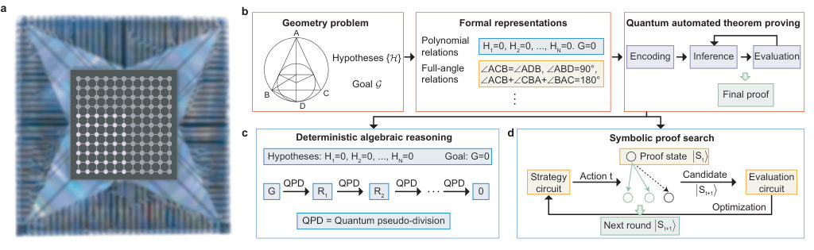
<figcaption class="paper-figure-caption"><b>Fig 1.</b> Fig. 1. The quantum processor and overview of quantum automated theorem proving. a, Superconducting quantum processor used in the experiments. The qubits marked in purple are selected to implement the quantum reasoning circuits. b, Overview of quantum automated theorem proving. Automated theorem proving seeks to derive a target conclusion G from a set of hypotheses H through formally valid inference. The geometry configuration shown is taken from a problem of the 1978 IMO and serves as an illustrative example. The hypotheses and conclusion are translated into exact formal representations, including polynomial equations and full-angle relations, and subsequently encoded into quantum...</figcaption>
</figure>
<figure class="paper-figure-card">
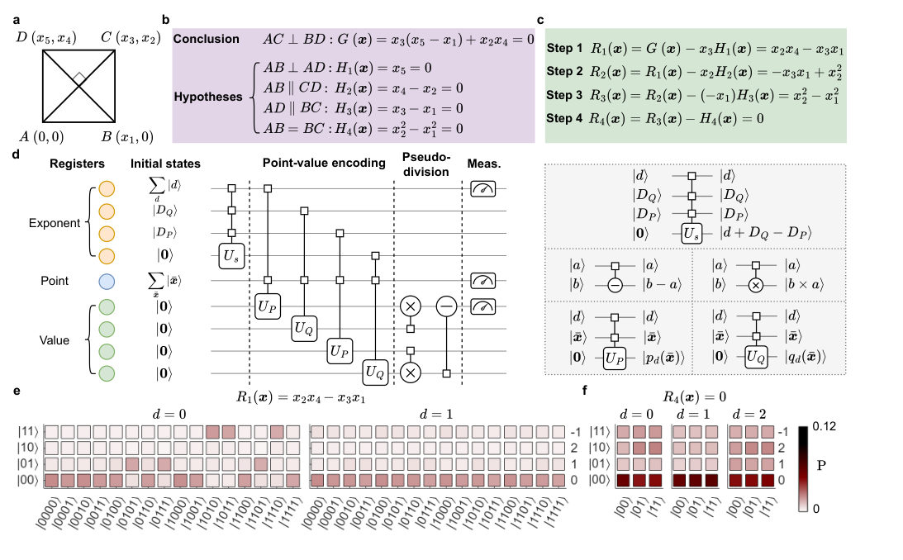
<figcaption class="paper-figure-caption"><b>Fig 2.</b> Fig. 2. Demonstration of quantum algebraic theorem proving with a square geometry problem. a, Coordinate representation of the square ABCD, with A = (0, 0), B = (x1, 0), C = (x3, x2) and D = (x5, x4). b, Polynomial formulation of the theorem. The geometric hypotheses AB ⊥AD, AB ∥CD, AD ∥BC and AB = BC are represented by the polynomials H1(x), . . . , H4(x), and the conclusion AC ⊥BD by the polynomial G(x), where x = (x1, x2, . . . , x5). c, Algebraic proof by successive pseudo-division. The variables x5, x4, x3 and x2 are eliminated sequentially using H1, H2, H3 and H4, respectively. The resulting pseudo-remainder chain terminates at R4(x) = 0, establishing the conclusion. d, The conceptual...</figcaption>
</figure>
<figure class="paper-figure-card">
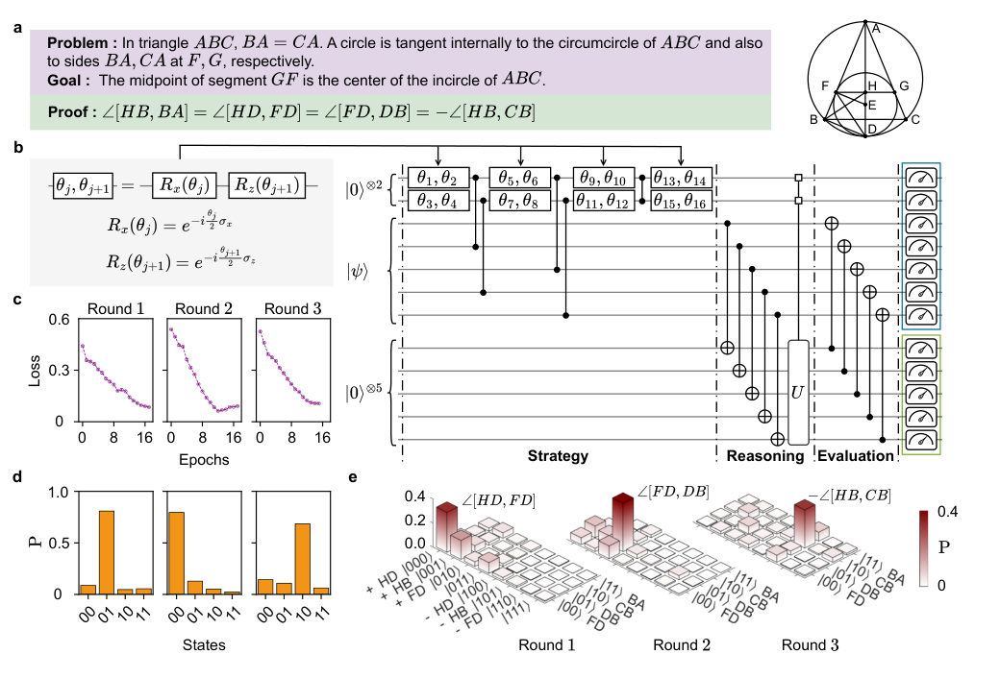
<figcaption class="paper-figure-caption"><b>Fig 3.</b> Fig. 3. Proving an IMO geometry theorem. a, Problem 4 of the 1978 IMO, together with its geometric configuration and a proof expressed in the full-angle formalism. b, Quantum circuit for a single proof-search round. The circuit consists of a parameterized strategy circuit, a fixed reasoning circuit and an evaluation circuit. Two action qubits encode the candidate inference operations, five qubits encode the input proof state |ψ⟩, and another five qubits encode the output proof state. The action register is initialized in |0⟩⊗2, and the output register in |0⟩⊗5. The input proof states are |00111⟩, |00000⟩and |01001⟩in rounds 1, 2 and 3, respectively. The left gray box shows the parameterized...</figcaption>
</figure>
</div>

<p><strong>Summary.</strong> This paper reports the experimental realization of automated geometry theorem proving on a superconducting quantum processor. The authors developed quantum frameworks for both algebraic deduction (using quantum pseudo-division) and symbolic reasoning. By successfully proving known geometry theorems, they establish that complex logical reasoning is a viable near-term task for quantum hardware.</p>
<p><strong>Why it may be interesting.</strong> While the core application is mathematical logic, the paper provides a concrete, hardware-level demonstration of executing complex, structured quantum algorithms (like QPD) on near-term superconducting devices, which is highly relevant for quantum algorithm development.</p>
<details>
<summary>Detailed structure</summary>
<p><strong>Main problem.</strong> To experimentally demonstrate automated theorem proving, specifically for geometry theorems, using quantum computation.</p>
<p><strong>Main result.</strong> The authors successfully proved two geometry theorems, including the perpendicularity of a square's diagonals, on a superconducting quantum processor.</p>
<p><strong>Method.</strong> They developed two quantum frameworks: one using quantum pseudo-division for algebraic deduction and another using a hybrid quantum-classical approach for symbolic proof search.</p>
<p><strong>Model / system.</strong> The work is performed on a fully programmable superconducting quantum processor featuring 121 frequency-tunable transmon qubits arranged in an $11 	imes 11$ lattice.</p>
<p><strong>Key observables.</strong> Measurement probabilities corresponding to the successful deduction of zero remainders (algebraic proof) or the coherent generation of a proof sequence (symbolic search).</p>
<p><strong>Important parameters / regimes.</strong> Gate fidelities (e.g., two-qubit gates $>99\%$), circuit depth (e.g., 77 layers for QPD step 1), and the number of qubits used (up to 28 physical qubits in optimized circuits).</p>
<p><strong>Assumptions / limitations.</strong> The process assumes that geometric relations can be mapped exactly into formal polynomial or full-angle quantum representations, and that hardware imperfections can be mitigated via techniques like Pauli Twirling.</p>
<p><strong>Figures summary.</strong> Figures illustrate the superconducting processor architecture, the workflow for both algebraic (QPD) and symbolic proof search, and detailed circuit diagrams showing the implementation of complex gates and the final experimental point-value correspondence.</p>
<p><strong>Paper structure.</strong> The paper details the theoretical foundations of quantum theorem proving, presents the two complementary quantum frameworks (algebraic and symbolic), describes the complex quantum circuit compilation and optimization process required for the superconducting hardware, and concludes with experimental results proving specific geometry theorems.</p>
</details>
<details>
<summary>Abstract</summary>
<p>Automated theorem proving seeks to use computational systems to prove or disprove mathematical and logical statements [1, 2]. It underpins a wide range of applications, and enhancing theorem-proving capabilities remains a central objective in artificial intelligence [3]. Although recent neuro-symbolic systems have achieved remarkable progress [4-7], their operation is ultimately constrained by classical computational architectures. Quantum computing [8], by contrast, enables information encoding and coherent parallelism beyond classical limits [9-14], raising the possibility of accelerating structured symbolic deduction [15]. Here we report the experimental realization of automated geometry theorem proving on a fully programmable superconducting quantum processor. We develop two complementary quantum proving frameworks. The first implements Wu's algebraic elimination method using quantum pseudo-division, with multivariate polynomials represented in superposition states, enabling quantum algebraic theorem proving. The second implements the full-angle method as backward symbolic reasoning through a hybrid quantum strategy-guided architecture, demonstrating a general route toward quantum symbolic proof search. As illustrative examples, we prove two theorems on a superconducting quantum processor: the perpendicularity of the diagonals of a square and a 1978 International Mathematical Olympiad geometry problem. Our results establish, at the experimental level, automated logical reasoning as a viable task for near-term quantum processors and provide a concrete pathway toward quantum-enhanced symbolic intelligence.</p>
</details>
<p><sub><a href="#top">↑ back to top</a></sub></p>

<p><a id="paper-2609.13744"></a></p>
<h3 id="room-temperature-storage-of-entanglement-in-a-silicon-carbide-quantum-node"><a href="http://arxiv.org/abs/2609.13744v1">Room-Temperature Storage of Entanglement in a Silicon Carbide Quantum Node</a></h3>
<p><strong>Authors:</strong> Shuo Ren, Rui-Jian Liang, Qi-Cheng Hu, Zhen-Xuan He, Ji-Yang Zhou, Wu-Xi Lin, Zhi-He Hao, Tao Tu, Jin-Shi Xu, Chuan-Feng Li, Guang-Can Guo<br>
<strong>Type:</strong> experiment · <strong>Category:</strong> quantum information and computing · <strong>PDF:</strong> <a href="https://arxiv.org/pdf/2609.13744v1">https://arxiv.org/pdf/2609.13744v1</a><br>
<strong>Analysis basis:</strong> full PDF text, analyzed in chunks
<strong>Topic relevance:</strong> 🔥 <code>QC/QI experiment</code> <strong>4/5</strong> · <code>quantum measurements</code> <strong>1/5</strong></p>
<div class="figure-strip-hint">↔ Scroll figures horizontally</div>
<div class="paper-figures-scroll">
<figure class="paper-figure-card">

<figcaption class="paper-figure-caption"><b>Fig 1.</b> FIG. 1. Energy levels of a PL6 center coupled to two 29Si nuclear spins in silicon carbide. (a) Schematic of a PL6 elec- tron spin coupled to two proximal nuclear spins forming a three-qubit register, with the electron spin as a processor and the nuclear spins as memory qubits. (b) Simplified energy- level diagram showing the eight computational basis states |000⟩–|111⟩. Blue arrows indicate electron-spin transitions conserving nuclear spin, while orange arrows denote nuclear- spin–flip transitions associated with different hyperfine cou- plings. (c) Pulse sequence for initializing the three-qubit reg- ister by transferring electron-spin polarization to the nuclear spins. (d) Pulsed ODMR...</figcaption>
</figure>
<figure class="paper-figure-card">

<figcaption class="paper-figure-caption"><b>Fig 2.</b> FIG. 2. Coherent control of a three-qubit register composed of a PL6 electron spin and two 29Si nuclear spins. (a) Opti- cally detected nuclear magnetic resonance spectrum showing two resolved resonances at 12.16 and 9.18 MHz, correspond- ing to nuclear-spin transitions of two inequivalent 29Si nuclei (labeled nucleus 1 and nucleus 2), each hyperfine-coupled to the electron spin of a single PL6 center. (b) Rabi oscillations of the two nuclear spins n1 and n2 at B = 330 G with the electron spin prepared in ms = −1. (c) Ramsey fringes of the electron spin. (d) Ramsey fringes of nuclear spin n2; solid lines are fits to the data.</figcaption>
</figure>
<figure class="paper-figure-card">

<figcaption class="paper-figure-caption"><b>Fig 3.</b> FIG. 3. Entanglement of two nuclear spins and a three-qubit GHZ-type state. (a) Reconstructed density matrix of the nuclear-spin Bell state obtained from quantum state tomog- raphy. (b) Measured coherence decay of the nuclear-spin Bell state. (c) Reconstructed dominant density-matrix elements of the three-qubit GHZ-type state. (d) Measured coherence decay of the GHZ-type state. Error bars denote statistical uncertainties.</figcaption>
</figure>
<figure class="paper-figure-card">

<figcaption class="paper-figure-caption"><b>Fig 4.</b> FIG. 4. Entanglement storage in nuclear-spin memory. (a) Schematic of entanglement transfer from the electron–n1 Bell state (|000⟩+ |110⟩)/ √</figcaption>
</figure>
</div>

<p><strong>Summary.</strong> This research demonstrates a breakthrough in solid-state quantum memory by storing multi-qubit entanglement at room temperature using a silicon carbide quantum node. By coherently transferring quantum information from a fast electron spin to much longer-lived nuclear spins, the entanglement lifetime is extended by over two orders of magnitude. This establishes SiC color centers as a powerful, scalable platform for quantum computing and sensing.</p>
<p><strong>Why it may be interesting.</strong> This work provides a concrete, scalable solid-state architecture for quantum memory by decoupling fast control operations from long-term storage, which is highly relevant for building quantum processors.</p>
<details>
<summary>Detailed structure</summary>
<p><strong>Main problem.</strong> The central challenge addressed is achieving robust, long-lived entanglement storage at room temperature in solid-state quantum systems.</p>
<p><strong>Main result.</strong> The authors successfully demonstrated room-temperature storage of multi-qubit entanglement by coherently transferring quantum correlations from a fast electron spin processor to long-lived nuclear-spin memory qubits.</p>
<p><strong>Method.</strong> The process involves using tailored microwave/RF pulse sequences and a SWAP-gate protocol to map the entangled state from the electron-nuclear subsystem onto the nuclear spins.</p>
<p><strong>Model / system.</strong> The platform is a shallow single PL6 color center in 4H-SiC, forming a hybrid three-qubit register (one electron spin, two coupled $^{29}	ext{Si}$ nuclear spins). The system dynamics are governed by the hyperfine interaction Hamiltonian.</p>
<p><strong>Key observables.</strong> Fidelity of generated states (e.g., Bell state: $94\pm2 \%$; GHZ state: $89\pm4 \%$), and the extended entanglement lifetime ($\sim 244 \mu	ext{s}$).</p>
<p><strong>Important parameters / regimes.</strong> Room temperature operation, electron-spin coherence time ($T_{2e}^* \approx 1.75 \mu	ext{s}$), and nuclear-spin coherence time ($T_{2n}^* \approx 359 \mu	ext{s}$).</p>
<p><strong>Assumptions / limitations.</strong> The storage lifetime is limited by residual electron-mediated decoherence, and the approach assumes the natural availability of multi-nuclear-spin registers in SiC.</p>
<p><strong>Figures summary.</strong> Figures illustrate the energy levels of the three-qubit register, ODMR spectra confirming control, and density matrix reconstructions showing the successful transfer and decay of entanglement over time.</p>
<p><strong>Paper structure.</strong> The paper establishes the problem (decoherence), details the physical system (PL6 in SiC), describes the measurement techniques (ODMR, QST), presents the core protocol (SWAP-gate transfer), and concludes by demonstrating high-fidelity, long-lived entanglement storage in both homonuclear and heteronuclear registers.</p>
</details>
<details>
<summary>Abstract</summary>
<p>Robust entanglement at room temperature is a central challenge for solid-state quantum information processing and quantum-enhanced sensing. Here we demonstrate room-temperature storage of entanglement in a silicon carbide (SiC) quantum node by coherently transferring an electron-nuclear entangled state onto long-lived nuclear-spin memory qubits. Using a shallow single color center in 4H-SiC, conventionally denoted PL6, we realize a fully addressable three-qubit register composed of one electron-spin processor and two strongly coupled $^{29}$Si nuclear-spin memory qubits. This platform enables the deterministic generation of high-fidelity entangled states, including a nuclear-spin Bell state with a fidelity of $94 \pm 2\%$ and a three-qubit Greenberger-Horne-Zeilinger (GHZ)-type state with a fidelity of $89 \pm 4\%$. By implementing a SWAP-gate protocol in the strong hyperfine-coupling regime, the electron-nuclear entanglement is transferred to the nuclear-spin memory with a fidelity of $92.5 \pm 2.5\%$, extending the entanglement lifetime by a factor of 240. We further confirm the generality of this approach in an additional heterogeneous $^{29}$Si-$^{13}$C nuclear-spin register and, through a statistical survey of 200 single PL6 centers, show that multi-nuclear-spin registers occur naturally with probabilities above 10%. These results position shallow SiC color centers as a powerful platform for entanglement-assisted quantum sensing and scalable room-temperature quantum technologies.</p>
</details>
<p><sub><a href="#top">↑ back to top</a></sub></p>

<p><a id="paper-2609.13669"></a></p>
<h3 id="batched-pattern-search-for-qaoa-parameter-optimization-on-cloud-accessed-quantum-hardware"><a href="http://arxiv.org/abs/2609.13669v1">Batched pattern search for QAOA parameter optimization on cloud-accessed quantum hardware</a></h3>
<p><strong>Authors:</strong> Muhammad Faryad<br>
<strong>Type:</strong> experiment · <strong>Category:</strong> quantum information and computing · <strong>PDF:</strong> <a href="https://arxiv.org/pdf/2609.13669v1">https://arxiv.org/pdf/2609.13669v1</a><br>
<strong>Analysis basis:</strong> full PDF text, analyzed in chunks
<strong>Topic relevance:</strong> 🔥 <code>QC/QI experiment</code> <strong>4/5</strong></p>
<div class="figure-strip-hint">↔ Scroll figures horizontally</div>
<div class="paper-figures-scroll">
<figure class="paper-figure-card">

<figcaption class="paper-figure-caption"><b>Fig 1.</b> FIG. 1. Two-qubit gate count and two-qubit depth of the swap-network synthesis compared with Qiskit’s preset pass manager at optimization level 3, for the four circuits actually submitted. Labels give the ratio.</figcaption>
</figure>
<figure class="paper-figure-card">

<figcaption class="paper-figure-caption"><b>Fig 2.</b> FIG. 2. The cost of a job on ibm fez, from the 193 jobs of this study. Left: measured wall-clock time from submission to result against the number of shots the job carried. The dashed line marks the shortest round trip observed. Right: the distribution of the same times, by instance size. Both panels are measured; the estimated metered time of Eq. (7) is shown for scale only.</figcaption>
</figure>
<figure class="paper-figure-card">

<figcaption class="paper-figure-caption"><b>Fig 3.</b> FIG. 3. How the two arms spend the shot budget of one job, drawn for the 6-asset settings. The batched arm divides the job’s shots among 4p + 2 parameter vectors; the serial arm spends all of them on one.</figcaption>
</figure>
<figure class="paper-figure-card">

<figcaption class="paper-figure-caption"><b>Fig 4.</b> FIG. 4. Optimization on ibm fez under a matched budget of jobs and shots. Upper: running maximum of the exact noiseless approximation ratio of the incumbent parameters, recomputed classically after every job; this is the quality of the point the optimizer has found, independent of how well the device can realize it. Lower: the best CVaR0.5 measured on the device so far. Both arms receive the same number of jobs and the same shots per job; the batched arm spends a job on 4p + 2 parameter vectors, the serial arm on one.</figcaption>
</figure>
<figure class="paper-figure-card">

<figcaption class="paper-figure-caption"><b>Fig 5.</b> FIG. 5. Final read-out quality against instance size, at 8192 shots. The γ = 0 control runs a circuit of identical gate count and depth whose ideal output is |+⟩⊗n; it tracks the uniform baseline at every size, which is what allows the separation between the measured curves and that baseline to be read as signal. The right panel is on a logarithmic scale; the downward arrow on the γ = 0 control at n = 12 marks an upper bound, that circuit having never sampled the optimum in 8192 shots.</figcaption>
</figure>
</div>

<p><strong>Summary.</strong> This paper investigates optimizing QAOA parameters on real quantum hardware by comparing batched versus sequential optimization strategies. It demonstrates that grouping multiple parameter evaluations into a single job (batching) drastically reduces the impact of job submission overhead compared to running evaluations one by one. This highlights that optimizing the classical optimization loop is as critical as optimizing the quantum circuit itself.</p>
<p><strong>Why it may be interesting.</strong> This work is highly relevant as it addresses the practical, non-algorithmic overheads (job scheduling, communication latency) that dominate near-term quantum computation, which is crucial for any physicist designing quantum algorithms for real hardware.</p>
<details>
<summary>Detailed structure</summary>
<p><strong>Main problem.</strong> The paper compares the efficiency of batched versus sequential optimization strategies for finding optimal parameters in the Quantum Approximate Optimization Algorithm (QAOA). The core challenge addressed is minimizing the overhead associated with submitting jobs to cloud-accessed quantum hardware.</p>
<p><strong>Main result.</strong> The batched pattern search method significantly outperforms sequential optimizers like COBYLA by amortizing the constant job submission overhead across multiple parameter evaluations, reaching comparable parameter quality in fewer total jobs.</p>
<p><strong>Method.</strong> The authors implemented and compared two optimization routines: a batched pattern search that submits multiple parameter sets in one job, and COBYLA, which requires a separate job for each function evaluation.</p>
<p><strong>Model / system.</strong> The problem solved is the cardinality-constrained portfolio selection, formulated as a QUBO solvable via QAOA. The experiments are conducted on IBM's ibmfez quantum processor, utilizing a custom odd–even transposition network to realize the required couplings deterministically.</p>
<p><strong>Key observables.</strong> Parameter quality (e.g., approximation ratio, CVaR), number of submitted jobs, and total shots.</p>
<p><strong>Important parameters / regimes.</strong> QAOA depth ($p$), number of assets ($n=6, 8, 10, 12$), and the optimization cost function ($ ext{CVaR}_\alpha$ with $\alpha=0.5$).</p>
<p><strong>Assumptions / limitations.</strong> The comparison is limited by the job submission overhead, which is assumed to be constant regardless of the number of circuits in the job. The small instance sizes allow for exact classical verification of the optimum.</p>
<p><strong>Figures summary.</strong> Figures compare resource usage (gate count, depth, time) between custom synthesis and preset pass managers, and show convergence curves comparing the two optimization methods.</p>
<p><strong>Paper structure.</strong> The paper first establishes the problem context (QAOA optimization on noisy hardware) and the overhead challenge. It then details the comparison between batched and serial optimization methods using portfolio selection as a benchmark. Results show performance gains for batching, followed by a depth scan confirming optimal QAOA layers.</p>
</details>
<details>
<summary>Abstract</summary>
<p>On a cloud-accessed quantum processor the classical optimizer of a variational algorithm communicates with the device through submitted jobs, and each job carries a queueing and turnaround overhead that does not depend on how many circuits it contains. We study a simple consequence of this for the quantum approximate optimization algorithm (QAOA). An optimizer whose next set of trial parameters is known before any result returns can evaluate the whole set in one job, whereas a sequential optimizer such as COBYLA spends one job per function evaluation. We compare a batched pattern search with COBYLA on IBM's \ibmfez\ processor for cardinality-constrained portfolio selection with six to twelve assets, giving both optimizers the same number of jobs and the same number of shots. At every size the batched search reaches, after its first job, a parameter quality that the serial optimizer takes several jobs to match, and the two methods converge to comparable final values; repeating the eight-asset comparison from four starting points gives the same ordering each time. The instances are small enough to be solved exactly, which lets us check that the device's output distribution is correlated with the true ranking of portfolios and is clearly separated from a control circuit of the same depth with the cost layer removed. A short scan over circuit depth at classically optimal parameters shows that on this device the measured solution quality peaks at two or three QAOA layers. The protocol is described in enough detail to be reproduced, and the notebooks and raw counts are released.</p>
</details>
<p><sub><a href="#top">↑ back to top</a></sub></p>

<p><a id="paper-2609.15662"></a></p>
<h3 id="efficient-quantum-state-tomography-with-two-complementary-projective-measurements"><a href="http://arxiv.org/abs/2609.15662v1">Efficient quantum state tomography with two complementary projective measurements</a></h3>
<p><strong>Authors:</strong> Xiang Li, Yong Wang, Lijun Liu, Yiguang Hong, Qing Gao, Shuming Cheng<br>
<strong>Type:</strong> both · <strong>Category:</strong> quantum information and computing · <strong>PDF:</strong> <a href="https://arxiv.org/pdf/2609.15662v1">https://arxiv.org/pdf/2609.15662v1</a><br>
<strong>Analysis basis:</strong> full PDF text, analyzed in chunks
<strong>Topic relevance:</strong> 🔥 <code>quantum measurements</code> <strong>4/5</strong></p>
<div class="figure-strip-hint">↔ Scroll figures horizontally</div>
<div class="paper-figures-scroll">
<figure class="paper-figure-card">

<figcaption class="paper-figure-caption"><b>Fig 1.</b> Fig. 1. (a) State infidelity versus algorithm iteration for 10-qubit states. (b) Reconstruction fidelity of 12-qubit target states versus the used KD-operator ratio K/d2. The curves correspond to a GHZ pure state and random states of rank 100 and 1000. (c) Runtime for reconstructing states with the KD-based CLRE and with the Pauli-based MLE. Results are obtained by averaging over 20 random states for (a), 10 random datasets for (b) and 10 random states for (c), with error bars denoting standard deviation.</figcaption>
</figure>
<figure class="paper-figure-card">

<figcaption class="paper-figure-caption"><b>Fig 2.</b> Fig. 2. (a) Measurement samples needed to achieve a recon- struction fidelity of 0.99 versus the qubit number. (b) State fidelity of 1-, 2-, and 3-qubit states under depolarizing gate noise of different strengths using the KD-based QST. Each point is averaged over 10 random states, with error bars as standard deviation.</figcaption>
</figure>
</div>

<p><strong>Summary.</strong> This paper introduces a novel, efficient protocol for Quantum State Tomography (QST) by leveraging Kirkwood-Dirac (KD) quasiprobability. It significantly reduces measurement overhead by requiring only two complementary measurements and employs a specialized complex logistic regression estimator. The results demonstrate that this method allows for the rapid, high-fidelity reconstruction of large, mixed-state quantum systems.</p>
<p><strong>Why it may be interesting.</strong> This work provides a concrete, scalable algorithm for characterizing complex quantum states, which is foundational knowledge for designing and benchmarking quantum hardware.</p>
<details>
<summary>Detailed structure</summary>
<p><strong>Main problem.</strong> Quantum State Tomography (QST) is crucial for characterizing quantum systems, but standard methods suffer from exponential measurement and computational costs.</p>
<p><strong>Main result.</strong> The proposed KD-based protocol significantly reduces measurement cost by using only two complementary measurements and achieves fast, accurate state reconstruction for large systems.</p>
<p><strong>Method.</strong> The authors utilize Kirkwood-Dirac (KD) quasiprobability to formulate a state reconstruction problem, solved via a Complex Logistic Regression Estimator (CLRE) optimized with Projected Gradient Descent (PGD).</p>
<p><strong>Model / system.</strong> The system is a general quantum state $\rho$ on a $d$-dimensional Hilbert space (e.g., $n$ qubits). The methodology is applied to reconstruct this unknown state from measurement statistics.</p>
<p><strong>Key observables.</strong> Reconstructed state $\tilde{\rho}$, reconstruction fidelity $F(\rho_1, \rho_2)$, and the KD quasiprobability distribution $\{q_{ab}\}$.</p>
<p><strong>Important parameters / regimes.</strong> The number of qubits ($n$), the dimension $d=2^n$, and the ratio of measured observables to required observables ($K/d^2$).</p>
<p><strong>Assumptions / limitations.</strong> The protocol relies on the theoretical framework of KD quasiprobability and assumes the effectiveness of the CLRE as a practical estimator, despite its lack of direct physical interpretation.</p>
<p><strong>Figures summary.</strong> Figures compare state infidelity vs. iteration (showing CLRE convergence speed vs. Pauli-MLE) and reconstruction fidelity vs. the ratio of measured observables to required observables ($K/d^2$).</p>
<p><strong>Paper structure.</strong> The paper introduces QST and KD quasiprobability, demonstrates KD's suitability, proposes the CLRE estimator, details the PGD algorithm, analyzes computational complexity, and concludes with extensive experimental validation.</p>
</details>
<details>
<summary>Abstract</summary>
<p>Quantum state tomography (QST) is of fundamental importance to characterize quantum systems in quantum information processing, but its practical implementation is severely hindered by the exponential scaling of measurement and computational costs. In this paper, we present a novel QST protocol that utilizes Kirkwood-Dirac (KD) quasiprobability to reconstruct quantum states. First, it enables state reconstruction with only two complementary rank-one projective measurements, thus significantly reducing the measurement cost. Then, a complex logistic regression estimator is proposed to process collected KD data, together with a projected gradient algorithm to mitigate numerical instability and to accelerate convergence. The product-operator structure of KD quasiprobability is further exploited to reduce the computational cost. Finally, extensive experiments are implemented to confirm the validity of our protocol. Notably, the full reconstruction of randomly generated 15-qubit mixed-state instances can be accomplished within 20 minutes under the GPU implementation. These results suggest a promising route toward scalable QST and benchmarking large-scale quantum systems.</p>
</details>
<p><sub><a href="#top">↑ back to top</a></sub></p>

<p><a id="paper-2609.15300"></a></p>
<h3 id="engineering-competing-fractional-topological-states-in-a-bhz-superlattice"><a href="http://arxiv.org/abs/2609.15300v1">Engineering Competing Fractional Topological States in a BHZ Superlattice</a></h3>
<p><strong>Authors:</strong> Ke-Chen Liu, Chen Cheng<br>
<strong>Type:</strong> theory · <strong>Category:</strong> strongly correlated electrons · <strong>PDF:</strong> <a href="https://arxiv.org/pdf/2609.15300v1">https://arxiv.org/pdf/2609.15300v1</a><br>
<strong>Analysis basis:</strong> full PDF text, analyzed in chunks
<strong>Topic relevance:</strong> 🔥 <code>analog quantum simulation</code> <strong>4/5</strong></p>
<div class="figure-strip-hint">↔ Scroll figures horizontally</div>
<div class="paper-figures-scroll">
<figure class="paper-figure-card">

<figcaption class="paper-figure-caption"><b>Fig 1.</b> FIG. 1. Superlattice reconstruction and target-band se- lection. (a) QWZ parent dispersion along Γ −X −M −Γ, with the positive-energy C = +1 band highlighted. (b) Superlattice spectrum for aM = 8 and V0 = 0.85 along the corresponding mini-Brillouin-zone path. The highlighted C = +1 target miniband has bandwidth W = 0.01075 and ∆ind/W = 5.75. (c) Normalized Berry curvature Ω(k)/Ωfor the QWZ parent and target miniband along the correspond- ing high-symmetry paths. The horizontal dashed line marks the uniform-curvature value Ω/Ω= 1. (d) Full-Brillouin-zone Berry-curvature fluctuation δΩversus ∆ind/W for the topo- logical minibands. Circles and squares denote |C| = 1 and |C| &gt; 1 minibands,...</figcaption>
</figure>
<figure class="paper-figure-card">

<figcaption class="paper-figure-caption"><b>Fig 2.</b> FIG. 2. Many-body identification of fractional Chern or- der in the engineered QWZ miniband on the 6 × 5 torus with N = 10 particles in Nϕ = 30 target-band orbitals at ν = 1/3. (a) Zero-twist momentum-resolved many-body spec- trum, with the lowest D = 3 manifold highlighted. Momen- tum sectors are displayed using the flattened index kindex = kxNy + ky, where kx and ky label the integer momentum- sector coordinates. (b) Spectral flow as θx is varied through one flux cycle at fixed θy = 0, with energies referenced to the zero-twist ground-state energy. The inset resolves the three lowest levels on a 10−3 energy scale, using the same twist interval and energy reference. (c) Unwrapped...</figcaption>
</figure>
<figure class="paper-figure-card">

<figcaption class="paper-figure-caption"><b>Fig 3.</b> FIG. 4. Polarized 2/3 fractional Chern state and comparison with the balanced BHZ response. (a) Zero-twist momentum- resolved spectrum on the 6 × 5 torus with N = 20 parti- cles in Nϕ = 30 target-band orbitals. Red levels denote the isolated rank-three low-energy manifold. Momentum sectors use the flattened index kindex = kxNy + ky. (b) Charge-flux spectral flow of the same manifold as θx is varied through one flux cycle at fixed θy = 0. (c) Unwrapped determinant Wilson-loop phase changes relative to their values at θx = 0, shown in units of 2π, for the polarized rank-three charge bun- dle, with CMB = 2 and |νW | = 2, and the balanced rank- nine mixed spin-charge bundle at λ = 0.3, with Csc...</figcaption>
</figure>
<figure class="paper-figure-card">

<figcaption class="paper-figure-caption"><b>Fig 4.</b> FIG. 3. Interaction-driven evolution of the balanced FQSH- like state on the 3×5 torus with (N↑, N↓) = (5, 5). (a) Charge- flux spectral flow at λ = 0.3 as θx is varied at fixed θy = 0. Red levels denote the lowest nine states, which form an iso- lated rank-nine manifold carrying charge and mixed spin- charge Chern numbers (Cc, Csc) = (0, 6). (b) Corresponding spectral flow at λ = 1, where the nine lowest states merge with higher excitations. Energies in (a) and (b) are refer- enced to the zero-twist ground-state energy. (c) Momentum- resolved particle-entanglement spectrum at λ = 0.3 for the equal mixture of the nine low-energy states and the cut (NA,↑, NA,↓) = (2, 2). Subsystem momenta...</figcaption>
</figure>
<figure class="paper-figure-card">

<figcaption class="paper-figure-caption"><b>Fig 5.</b> FIG. 5. Energetic competition between balanced and po- larized fractional states on the 3 × 5 torus. (a) Energy difference ∆Ebal−pol = EP =0 −EP =1 as a function of the finite-q intercomponent coupling λ and uniform pseudospin anisotropy gz. Positive values indicate that the polarized sec- tor is lower in energy, while negative values favor the balanced sector. Dashed segments mark ∆Ebal−pol = 0, the balanced– polarized degeneracy. (b) Ground-sector polarization PGS ob- tained by minimizing over all six conserved polarization sec- tors. Partially polarized sectors enter the lower envelope at the strongest sampled intercomponent couplings. Horizontal white gaps separate independently...</figcaption>
</figure>
</div>

<p><strong>Summary.</strong> This theoretical work demonstrates how engineering a superlattice on a Chern-insulator model can create a highly uniform miniband capable of hosting a fractional Chern insulator. By analyzing the competition between different correlated states using pseudospin anisotropy, the authors show a pathway to selectively control the ground state between a balanced FQSH-like state and a fully polarized FCI.</p>
<p><strong>Why it may be interesting.</strong> The work provides a concrete, tunable lattice platform (superlattice) to realize and control multiple competing topological phases (FQSH vs. FCI), which is highly relevant for designing artificial quantum matter systems.</p>
<details>
<summary>Detailed structure</summary>
<p><strong>Main problem.</strong> The paper addresses the challenge of engineering and controlling competing fractional topological states by combining band structure reconstruction, interaction-driven correlation effects, and external control mechanisms.</p>
<p><strong>Main result.</strong> The authors demonstrate that applying a superlattice modulation to the QWZ model creates a narrow miniband hosting a $
u=1/3$ Fractional Chern Insulator (FCI), which, when paired with its time-reversed partner (BHZ), exhibits a competition between a balanced FQSH-like state and a fully polarized FCI.</p>
<p><strong>Method.</strong> The study uses exact diagonalization on a projected interacting Hamiltonian derived from the superlattice-reconstructed single-particle band, supplemented by analysis of energy sector competition using pseudospin anisotropy.</p>
<p><strong>Model / system.</strong> The system is based on the Qi-Wu-Zhang (QWZ) Chern-insulator model, modified by a scalar superlattice modulation to form a BHZ superlattice. The analysis focuses on the resulting isolated $C=+1$ miniband and its many-body physics at total filling $2/3$.</p>
<p><strong>Key observables.</strong> Berry curvature ($\Omega$), quantum metric fluctuation ($\delta 	ext{Tr } g$), Chern number ($   ext{CMB}$), and the relative energies of competing polarization sectors ($E_P$).</p>
<p><strong>Important parameters / regimes.</strong> Total filling ($
u=2/3$), superlattice modulation strength ($V_0$), and the strength of the uniform pseudospin anisotropy ($g_z$).</p>
<p><strong>Assumptions / limitations.</strong> The analysis assumes that the superlattice reconstruction successfully isolates the target miniband, and that the competition between states can be mapped onto the relative energy shifts governed by pseudospin anisotropy.</p>
<p><strong>Figures summary.</strong> Figure 1 illustrates the superlattice reconstruction, showing the narrow, isolated target miniband and the reduction in geometric fluctuations. Figure 2 confirms the FCI nature via spectral flow and $   ext{CMB}=1$. Figure E1 details how uniform anisotropy shifts the energy of different polarization sectors, determining the ground state.</p>
<p><strong>Paper structure.</strong> The paper first establishes the physical model using a superlattice applied to the QWZ model. It then analyzes the single-particle reconstruction to confirm the formation of a uniform, isolated miniband. Subsequently, it performs many-body calculations to identify the $
u=1/3$ FCI, and finally, it analyzes the competition between different fractional states using the pseudospin anisotropy parameter.</p>
</details>
<details>
<summary>Abstract</summary>
<p>Scalar superlattices offer a route from simple topological bands to fractionalized states, while multicomponent systems raise the additional question of which fractional order is energetically selected. We show that a scalar superlattice applied to the Qi-Wu-Zhang (QWZ) Chern-insulator model produces an isolated C = +1 miniband with strongly improved Berry-curvature and quantum metric uniformity. Exact diagonalization of the projected interaction identifies a 1/3 fractional Chern insulator in this miniband. Restoring the time-reversed partner to form the Bernevig-Hughes-Zhang (BHZ) superlattice yields, at total filling 2/3, a balanced fractional quantum spin Hall (FQSH)-like state and a fully polarized 2/3 fractional Chern insulator. Their competition separates two aspects of fractional-state control: the finite-momentum intercomponent coupling governs the stability of the balanced FQSH-like state, whereas a uniform pseudospin anisotropy shifts the relative energies of conserved sectors and can switch the global ground state between the balanced and polarized states. These results establish a minimal lattice setting that connects topological-miniband reconstruction, fractional-state formation, and fractional-state selection, illustrating how distinct levels of control can be combined to navigate competing fractional topological states.</p>
</details>
<p><sub><a href="#top">↑ back to top</a></sub></p>

<p><a id="paper-2609.15575"></a></p>
<h3 id="bell-inequality-violation-in-light-transmitted-through-disordered-emitter-ensembles"><a href="http://arxiv.org/abs/2609.15575v1">Bell-inequality violation in light transmitted through disordered emitter ensembles</a></h3>
<p><strong>Authors:</strong> Ruolin Guan, Vineesha Srivastava, Kasper J. Kusmierek, Ivan Vybornyi, Klemens Hammerer<br>
<strong>Type:</strong> theory · <strong>Category:</strong> other · <strong>PDF:</strong> <a href="https://arxiv.org/pdf/2609.15575v1">https://arxiv.org/pdf/2609.15575v1</a><br>
<strong>Analysis basis:</strong> full PDF text, analyzed in chunks
<strong>Topic relevance:</strong> <code>Tavis-Cummings &amp; cavity-many-emitter</code> <strong>3/5</strong> · <code>correlated / nonlocal dissipation</code> <strong>3/5</strong> · <code>Keldysh / 2PI / non-Gaussian methods</code> <strong>2/5</strong> · <code>analog quantum simulation</code> <strong>2/5</strong> · <code>driven-dissipative phase transition</code> <strong>2/5</strong> · <code>interference shaping light</code> <strong>2/5</strong> · <code>methods for driven-dissipative</code> <strong>2/5</strong> · <code>Dicke superradiance</code> <strong>1/5</strong> · <code>Full counting statistics</code> <strong>1/5</strong> · <code>non-equilibrium universality</code> <strong>1/5</strong> · <code>quantum measurements</code> <strong>1/5</strong></p>
<div class="figure-strip-hint">↔ Scroll figures horizontally</div>
<div class="paper-figures-scroll">
<figure class="paper-figure-card">

<figcaption class="paper-figure-caption"><b>Fig 1.</b> Figure 1. A coherent continuous-wave field ain(t) drives, from the left, a disordered ensemble of two-level systems coupled either (a) to a waveguide or (b) in free space. The atoms cou- ple weakly to the left- and right-propagating 1D fields and strongly to environmental modes, with corresponding scat- tering rates Γ1D ≪γ. (c) The field transmitted to the right, aout(t), is split and analyzed with two matched unbalanced Mach-Zehnder interferometers. The phases ϕA and ϕB de- fine the local settings of the Bell test on the detected fields aµ(t, ϕµ), with µ = A, B.</figcaption>
</figure>
<figure class="paper-figure-card">

<figcaption class="paper-figure-caption"><b>Fig 2.</b> Figure 2. (Top panels) Disorder-averaged steady-state observables for fixed-position realizations of the bidirectional waveguide model (BWM) and comparison with the ensemble-averaged model (EAM). The panels (a) −(d) respectively show g(2)(0), R, Sopt, and sout versus emitter number N for coupling strength β = 0.1, disorder η = 0.5, and fixed input saturation s0 = 0.0198. Black circles show the average over 20 randomly chosen configurations with standard-deviation error bars, and red circles show the EAM result. (Bottom panels) Ensemble-averaged model at disorder η = 0.5. The panels (e) −(h) respectively show the fourth-order cumulant maps of g(2)(0), sout, R, and Sopt versus N and s0 for β...</figcaption>
</figure>
<figure class="paper-figure-card">

<figcaption class="paper-figure-caption"><b>Fig 3.</b> Figure 3. (a,b) Optimal Bell parameter Sopt versus N and β for input saturation s0 = 0.08 and disorder η = 0.5, and extrapolation of the Sopt = 2 contour branches toward smaller β. The contour branch fits in (b) are of the form β = cN −α, with (c, α) = (0.2358, 0.7334), (0.4429, 0.7017), and (0.4864, 0.7017) for B1, B2, and B3, respectively. The exponent for B2 and B3 was enforced to be the same. (c) Minimum equal-time normally ordered quadrature variance minθ⟨: (δXθ)2 :⟩/Γtot versus N and s0 for coupling strength β = 0.1 and disorder η = 0.5. (d) Map of g(2)(0)(1−R) in the same parameter plane as (c). The black contour marks the Gaussian bound g(2)(0)(1 −R) = 2; values above the black...</figcaption>
</figure>
</div>

<p><strong>Summary.</strong> This theoretical study predicts that light passing through disordered ensembles of two-level emitters can violate a Bell inequality. The violation is found to occur in two distinct regimes—antibunched and bunched—depending on the number of emitters present. The analysis uses advanced techniques like fourth-order cumulant expansions applied to the system's master equation.</p>
<p><strong>Why it may be interesting.</strong> This work connects fundamental quantum non-locality tests (Bell inequalities) to realistic solid-state quantum emitters, providing theoretical predictions for observable quantum correlations in disordered media.</p>
<details>
<summary>Detailed structure</summary>
<p><strong>Main problem.</strong> The paper investigates the violation of Bell inequalities using light transmitted through disordered ensembles of weakly coupled two-level emitters.</p>
<p><strong>Main result.</strong> Bell-inequality violations are predicted in two distinct regimes—an antibunched regime ($N \simeq 75-220$) and a bunched regime ($N \gtrsim 250$)—depending on the emitter density.</p>
<p><strong>Method.</strong> The analysis employs a fourth-order cumulant expansion of the many-body master equation to calculate necessary output-field correlations.</p>
<p><strong>Model / system.</strong> The system is a disordered ensemble of weakly coupled two-level emitters coupled to a 1D optical channel, modeled using the bidirectional waveguide model (BWM).</p>
<p><strong>Key observables.</strong> Equal-time intensity correlation $g^{(2)}(0)$ and phase-sensitive two-photon coherence $R$, which determine the optimized CHSH parameter $S_{	ext{opt}}$.</p>
<p><strong>Important parameters / regimes.</strong> Single-emitter coupling $eta$, total decay rate $\Gamma_{	ext{tot}}$, and the total number of emitters $N$.</p>
<p><strong>Assumptions / limitations.</strong> The calculations rely on a fourth-order cumulant expansion of the master equation, and the analysis distinguishes between antibunched and bunched correlation regimes.</p>
<p><strong>Figures summary.</strong> Figures illustrate the experimental setup, show disorder-averaged observables ($g^{(2)}, R, S_{	ext{opt}}$) versus $N$, and map out the parameter space showing the existence of violation in both antibunched and bunched regimes.</p>
<p><strong>Paper structure.</strong> The paper establishes the physical model via the master equation, derives the necessary correlation functions using cumulant expansions, predicts the existence of Bell violation in two distinct regimes, and quantifies the required emitter numbers for violation in each regime.</p>
</details>
<details>
<summary>Abstract</summary>
<p>We show that light transmitted through a disordered ensemble of weakly coupled two-level emitters can violate a Bell inequality in a continuous-wave Franson-type measurement. The Bell signal is determined by two steady-state output-field correlations, the equal-time intensity correlation $g^{(2)}(0)$ and the phase-sensitive two-photon coherence $R$. We compute these quantities for bidirectional propagation through disordered emitter ensembles using a fourth-order cumulant expansion of the many-body master equation. The resulting Bell inequality violation appears in two distinct regimes, an antibunched regime where equal-time coincidences are suppressed and a bunched regime where photon pairs remain phase coherent. Extrapolating the numerics to a representative weak single-emitter coupling $β=0.01$ predicts violation in the antibunched regime for atom numbers $N\simeq75$-$220$, and in the bunched regime for $N\gtrsim250$.</p>
</details>
<p><sub><a href="#top">↑ back to top</a></sub></p>

<p><a id="paper-2609.13996"></a></p>
<h3 id="local-pair-correlations-and-network-geometry-govern-collective-oscillations-in-nonreciprocal-ising-networks"><a href="http://arxiv.org/abs/2609.13996v1">Local pair correlations and network geometry govern collective oscillations in nonreciprocal Ising networks</a></h3>
<p><strong>Authors:</strong> Zihua Liu, Xudong Wu, Liantuan Xiao<br>
<strong>Type:</strong> both · <strong>Category:</strong> statistical mechanics · <strong>PDF:</strong> <a href="https://arxiv.org/pdf/2609.13996v1">https://arxiv.org/pdf/2609.13996v1</a><br>
<strong>Analysis basis:</strong> full PDF text, analyzed in chunks
<strong>Topic relevance:</strong> <code>analog quantum simulation</code> <strong>3/5</strong> · <code>driven-dissipative phase transition</code> <strong>3/5</strong> · <code>methods for driven-dissipative</code> <strong>3/5</strong> · <code>non-equilibrium universality</code> <strong>3/5</strong> · <code>Keldysh / 2PI / non-Gaussian methods</code> <strong>2/5</strong> · <code>correlated / nonlocal dissipation</code> <strong>2/5</strong> · <code>quantum measurements</code> <strong>1/5</strong> · <code>scars &amp; prethermalization</code> <strong>1/5</strong></p>
<div class="figure-strip-hint">↔ Scroll figures horizontally</div>
<div class="paper-figures-scroll">
<figure class="paper-figure-card">

<figcaption class="paper-figure-caption"><b>Fig 1.</b> Figure 1: Nonreciprocal model and degree-preserving edge swapping. (a) Each site carries one binary spin from species A and one from species B. The responses B →A and A →B are asymmetric. (b) Local view of the periodic square lattice. Spins of the same species interact reciprocally with strength J along undirected edges, and the full network has coordination number z = 4. (c) A valid double-edge swap reconnects two removed edges crosswise. It changes short cycles and long-range connections while preserving the coordination number of every node. Magenta curves show the new edges and dotted lines show the removed edges.</figcaption>
</figure>
<figure class="paper-figure-card">

<figcaption class="paper-figure-caption"><b>Fig 2.</b> Figure 5 uses two additional L = 208, N = 43264, trajectories. Each trajectory is thermalized for 3000 MCS and prescanned for 640 MCS at intervals of 2 MCS. A frame is selected near a prespecified global phase, then the microscopic state is reproduced deterministically with the same network and dynamical seeds.</figcaption>
</figure>
<figure class="paper-figure-card">

<figcaption class="paper-figure-caption"><b>Fig 3.</b> Figure 2: Predictions of global oscillation characteristics by the local theories. All panels use βK+ = 0, βK−= 0.50, z = 4, and τ = 1. (a) Phase-plane trajectories at βJ = 0.50. MF converges to the black static ordered point. ID, BG, and NSC produce limit cycles, with ID markedly overestimating the amplitude. (b) Oscillation amplitude. (c) Angular momentum calculated at ∆t = 2τ. (d) Period. The period is comparatively insensitive to the local information retained by the theories. Theory curves in panels (b)–(d) use 201 coupling values. The lower axes show the relative difference between BG and NSC, defined as 100(XBG −XNSC)/XNSC. The gray zero line is a guide to the eye.</figcaption>
</figure>
<figure class="paper-figure-card">

<figcaption class="paper-figure-caption"><b>Fig 4.</b> Figure 3: Finite-size test at βJ = 0.50, βK+ = 0, βK−= 0.50, and z = 4. (a,b) Representative L = 32 magnetization trajectories over 180 MCS. (c) Oscillation amplitude. (d) Angular momentum. (e) Period obtained from filtered upward crossings of mA = 0. Symbols represent nine simulated sizes. Error bars for edge-swapped networks are standard errors over four independent networks. Error bars for the square lattice are obtained from four independent dynamical batches on the same periodic topology. Dotted lines are a + b/N fits. Horizontal solid lines show the NSC prediction at βJ = 0.50.</figcaption>
</figure>
<figure class="paper-figure-card">

<figcaption class="paper-figure-caption"><b>Fig 5.</b> Figure 4: Coupling scan at L = 48, βK+ = 0, βK−= 0.50, and z = 4. (a) Oscillation amplitude. (b) Angular momentum calculated at ∆t = 2τ. (c) Effective upward crossing period. Symbols show Monte Carlo results. Error bars are standard errors across independent networks for f &gt; 0 and independent dynamical batches for the square lattice. The two edge-swapped series are displaced by ±0.00065 along the βJ axis for visibility only. Each theoretical line contains 201 independent ODE solutions. The theory curves represent NSC, BG, and ID. For the square lattice, T denotes an effective crossing period from low-amplitude fluctuations.</figcaption>
</figure>
</div>

<p><strong>Summary.</strong> This work investigates collective oscillations in nonreciprocal Ising spin networks, comparing theoretical approximations against detailed Monte Carlo simulations. The key finding is that while local interaction parameters are crucial, the macroscopic oscillatory behavior is fundamentally dictated by the network's geometry, as demonstrated by contrasting results on periodic versus edge-swapped lattices.</p>
<p><strong>Why it may be interesting.</strong> The focus on non-equilibrium dynamics, collective oscillations, and the explicit comparison of local correlation approximations (NSC) to global behavior is highly relevant to open quantum systems and non-equilibrium statistical mechanics.</p>
<details>
<summary>Detailed structure</summary>
<p><strong>Main problem.</strong> The study aims to determine how local nonreciprocal interactions predict global collective oscillations in nonreciprocal Ising networks, and whether network geometry is the key determinant of these oscillations.</p>
<p><strong>Main result.</strong> The paper finds that while local theories can predict oscillations on edge-swapped networks, the macroscopic behavior (amplitude and angular momentum) strongly depends on the underlying network geometry, showing a clear difference between periodic lattices and swapped ones.</p>
<p><strong>Method.</strong> The authors compare three theoretical approximations (Mean-Field, Independent-Node, Nearest-Neighbor Spin-Coupling) against extensive Monte Carlo simulations on different network topologies.</p>
<p><strong>Model / system.</strong> The system is a two-spin nonreciprocal Ising model defined on a connected undirected network, featuring nonreciprocal Glauber dynamics. The model is analyzed on both periodic square lattices and degree-preserving edge-swapped networks.</p>
<p><strong>Key observables.</strong> Oscillation amplitude ($R_{rms}$), angular momentum ($L$), and period ($T$) are the primary global diagnostics used to characterize the collective dynamics.</p>
<p><strong>Important parameters / regimes.</strong> Key parameters include the coupling strengths ($eta J, eta K^+, eta K^-$), the coordination number ($z=4$), system size ($L$), and the edge-swapping intensity ($f$).</p>
<p><strong>Assumptions / limitations.</strong> The analysis relies on comparing theoretical closures (MF, ID, NSC) against the full, non-equilibrium dynamics simulated via Monte Carlo methods.</p>
<p><strong>Figures summary.</strong> Figures illustrate the model setup, the comparison of theoretical predictions vs. MC results for $R_{rms}, L, T$ across different couplings, and finite-size scaling tests showing the divergence of behavior between square lattices and edge-swapped networks.</p>
<p><strong>Paper structure.</strong> The paper progresses by first establishing the model and comparing local theories (MF, ID, NSC) against MC simulations. It then performs finite-size scaling tests by comparing results on periodic lattices versus edge-swapped networks to isolate the role of geometry.</p>
</details>
<details>
<summary>Abstract</summary>
<p>Nonreciprocal many-body dynamics can develop a swap phase characterized by spontaneous global oscillations far from equilibrium. To determine how local nonreciprocal interactions predict global oscillations and how broadly this prediction applies, we compare mean-field theory, independent-node theory, and nearest-neighbor spin-coupling theory for a two-spin nonreciprocal Ising model on networks of fixed coordination number (\(z=4\)). Nearest-neighbor spin-coupling theory retains nine independent joint edge probabilities. Monte Carlo benchmarks show that it predicts the oscillation amplitude, angular momentum, and period on edge-swapped networks with a 2.1\% aggregate mean absolute relative error. We then extend the square lattice to degree-preserving edge-swapped networks and find sharply different behavior. With increasing system size, the oscillation amplitude and angular momentum decay strongly on the periodic square lattice but remain nearly size independent on edge-swapped networks. These results show that identical local parameters do not determine the macroscopic phase. The contrasting finite-size trends identify network geometry as a key determinant of collective oscillations at fixed local interaction parameters.</p>
</details>
<p><sub><a href="#top">↑ back to top</a></sub></p>

<p><a id="paper-2609.13863"></a></p>
<h3 id="open-quantum-systems"><a href="http://arxiv.org/abs/2609.13863v1">Open Quantum Systems</a></h3>
<p><strong>Authors:</strong> Erik Torrontegui, Ricardo Puebla<br>
<strong>Type:</strong> theory · <strong>Category:</strong> statistical mechanics · <strong>PDF:</strong> <a href="https://arxiv.org/pdf/2609.13863v1">https://arxiv.org/pdf/2609.13863v1</a><br>
<strong>Analysis basis:</strong> full PDF text, analyzed in chunks
<strong>Topic relevance:</strong> <code>correlated / nonlocal dissipation</code> <strong>3/5</strong> · <code>driven-dissipative phase transition</code> <strong>3/5</strong> · <code>methods for driven-dissipative</code> <strong>3/5</strong> · <code>Keldysh / 2PI / non-Gaussian methods</code> <strong>2/5</strong> · <code>non-equilibrium universality</code> <strong>2/5</strong> · <code>quantum measurements</code> <strong>2/5</strong> · <code>Tavis-Cummings &amp; cavity-many-emitter</code> <strong>1/5</strong> · <code>analog quantum simulation</code> <strong>1/5</strong> · <code>scars &amp; prethermalization</code> <strong>1/5</strong></p>
<div class="figure-strip-hint">↔ Scroll figures horizontally</div>
<div class="paper-figures-scroll">
<figure class="paper-figure-card">

<figcaption class="paper-figure-caption"><b>Fig 1.</b> Figure 1: Representation of a general qubit state ρ on the Bloch sphere. The relation between the position of the state on the ball and the density matrix ρ is established by the projections of the Bloch vector ⃗v on the Cartesian axis according to Eq. (44). Pure states |ψ〉(|⃗v| = 1) are located on the surface while the completely mixed state ρcm = I/2 (|⃗v| = 0) is placed at the origin.</figcaption>
</figure>
<figure class="paper-figure-card">

<figcaption class="paper-figure-caption"><b>Fig 2.</b> Figure 2: Quantum channels. The abstract representation of a quantum channel is shown in panel a), where an input state ρ undergoes an operation E that results in the output state E(ρ). The panel b) shows the concept of complete positivity, that is, given a bipartite system whose global state ρ is entangled, the action of a quantum channel E only on one of the parties must result in a physical state, i.e. E and E ⊗I must be positive. This guarantees that the output state ρ′ = (E ⊗I)(ρ) is physical for any input state ρ.</figcaption>
</figure>
<figure class="paper-figure-card">

<figcaption class="paper-figure-caption"><b>Fig 3.</b> Figure 5: Dynamics of a qubit undergoing driving and dephasing, initially in a pure</figcaption>
</figure>
<figure class="paper-figure-card">

<figcaption class="paper-figure-caption"><b>Fig 4.</b> Figure 6: Dynamics of a qubit under driving and dephasing with a defective Liou- villian, γz = ω. This gives rise to transient behavior where certain observables or properties scale as tne−|λα|t. In this simple case, appears as vz(t) ∼te−γz t.</figcaption>
</figure>
<figure class="paper-figure-card">

<figcaption class="paper-figure-caption"><b>Fig 5.</b> Fig. 6 for the same initial state as in Fig. 5, but with γz = ωa.</figcaption>
</figure>
</div>

<p><strong>Summary.</strong> This text provides a comprehensive theoretical framework for open quantum systems, detailing how environmental interaction causes decoherence and dissipation. It develops the necessary mathematical tools, such as the quantum master equation, to model the system's reduced dynamics. The work connects these quantum mechanical descriptions directly to fundamental principles of quantum thermodynamics.</p>
<p><strong>Why it may be interesting.</strong> This is highly relevant as it provides the foundational theoretical tools (GKSL, reduced dynamics) necessary to model realistic quantum devices where environmental coupling is unavoidable, bridging quantum mechanics with thermodynamics.</p>
<details>
<summary>Detailed structure</summary>
<p><strong>Main problem.</strong> The paper addresses the challenge of describing quantum systems that interact unavoidably with their environment, focusing on understanding the physical origins of decoherence and dissipation.</p>
<p><strong>Main result.</strong> It develops the theoretical framework using quantum master equations (GKSL) to model open quantum dynamics, connecting these processes to fundamental principles of quantum thermodynamics.</p>
<p><strong>Method.</strong> The methodology involves deriving reduced dynamics by tracing out environmental degrees of freedom, utilizing the density matrix formalism, and applying approximations like the Born-Markov limit.</p>
<p><strong>Model / system.</strong> The system is a general quantum system interacting with an environment. The dynamics are modeled using the Lindblad master equation, which governs the time evolution of the density matrix $\rho$. Specific examples include qubit dynamics and harmonic oscillators.</p>
<p><strong>Key observables.</strong> Purity ($P$), Quantum Coherence ($C(\rho)$), Heat ($\langle Q \rangle$), Internal Energy ($\Delta U$), and the steady-state thermal population ratios.</p>
<p><strong>Important parameters / regimes.</strong> Temperature ($T$), coupling strengths ($\gamma$), and characteristic time scales ($T_2$).</p>
<p><strong>Assumptions / limitations.</strong> The primary assumptions include the use of the Born-Markov approximation and the requirement of detailed balance for reaching thermal equilibrium.</p>
<p><strong>Figures summary.</strong> The notes reference a Bloch sphere trajectory showing decay towards the center for qubit dynamics, and equations detailing heat and energy flow over time.</p>
<p><strong>Paper structure.</strong> The structure progresses from reviewing closed system dynamics (Schrödinger/von Neumann) to introducing the open system challenge, deriving the GKSL equation, and finally applying the formalism to quantum thermodynamics laws (heat, work, entropy).</p>
</details>
<details>
<summary>Abstract</summary>
<p>Open quantum systems describe quantum systems that interact unavoidably with their environments. These notes introduce the physical origins of decoherence and dissipation in realistic settings, developing the theoretical framework of reduced dynamics and quantum master equations within the connection to thermodynamics in the quantum regime. Additionally, a set of relevant exercises are proposed to reinforce the acquisition of knowledge. The text equips readers with the tools to model and analyze open quantum dynamics.</p>
</details>
<p><sub><a href="#top">↑ back to top</a></sub></p>

<p><a id="paper-2609.13600"></a></p>
<h3 id="braid-map-definition-of-slh-networks-and-the-series-product"><a href="http://arxiv.org/abs/2609.13600v1">Braid map definition of SLH-networks and the series product</a></h3>
<p><strong>Authors:</strong> Luc Bouten<br>
<strong>Type:</strong> theory · <strong>Category:</strong> other · <strong>PDF:</strong> <a href="https://arxiv.org/pdf/2609.13600v1">https://arxiv.org/pdf/2609.13600v1</a><br>
<strong>Analysis basis:</strong> full PDF text, analyzed in chunks
<strong>Topic relevance:</strong> <code>Keldysh / 2PI / non-Gaussian methods</code> <strong>3/5</strong> · <code>correlated / nonlocal dissipation</code> <strong>3/5</strong> · <code>driven-dissipative phase transition</code> <strong>3/5</strong> · <code>methods for driven-dissipative</code> <strong>3/5</strong> · <code>non-equilibrium universality</code> <strong>2/5</strong> · <code>quantum measurements</code> <strong>2/5</strong> · <code>analog quantum simulation</code> <strong>1/5</strong></p>
<div class="figure-strip-hint">↔ Scroll figures horizontally</div>
<div class="paper-figures-scroll">
<figure class="paper-figure-card">

<figcaption class="paper-figure-caption"><b>Fig 1.</b> Low-resolution page preview, page 2</figcaption>
</figure>
<figure class="paper-figure-card">

<figcaption class="paper-figure-caption"><b>Fig 2.</b> Low-resolution page preview, page 3</figcaption>
</figure>
<figure class="paper-figure-card">

<figcaption class="paper-figure-caption"><b>Fig 3.</b> Low-resolution page preview, page 4</figcaption>
</figure>
<figure class="paper-figure-card">

<figcaption class="paper-figure-caption"><b>Fig 4.</b> Low-resolution page preview, page 5</figcaption>
</figure>
</div>

<p><strong>Summary.</strong> This paper introduces the braid map to provide a rigorous definition for the time evolution of complex quantum systems called SLH-networks. By utilizing quantum stochastic calculus, the authors derive the series product, showing it accurately describes the network's dynamics in the limit of zero time delay. This provides a powerful mathematical tool for analyzing interconnected quantum processes.</p>
<p><strong>Why it may be interesting.</strong> This work provides a sophisticated mathematical framework for modeling open quantum systems with complex, delayed, and interconnected dynamics, which is highly relevant for quantum optics and open quantum systems theory.</p>
<details>
<summary>Detailed structure</summary>
<p><strong>Main problem.</strong> The paper rigorously defines the time-evolution of an SLH-network, resolving ambiguities in the initial definition related to the essential self-adjointness of the generator.</p>
<p><strong>Main result.</strong> The braid map provides an unambiguous definition for the network, and the series product is shown to govern the time evolution in the instantaneous feed-forward limit.</p>
<p><strong>Method.</strong> The authors employ quantum stochastic calculus, defining the evolution via a unitary cocycle and deriving the series product by taking the zero-delay limit of the cascaded system evolution.</p>
<p><strong>Model / system.</strong> The model is an SLH-network, conceptualized as a cascade of quantum systems connected by feedback connections characterized by a time delay. The dynamics are governed by a unitary cocycle solving a Quantum Stochastic Differential Equation (QSDE).</p>
<p><strong>Key observables.</strong> The time-evolution operator $\hat{U}_t$ and the resulting series product $V_t$.</p>
<p><strong>Important parameters / regimes.</strong> The time delay $\xi$, the network structure defined by the SLH-triple $(S, L, H)$, and the limit parameter $  au  o 0$ (instantaneous feed-forward limit).</p>
<p><strong>Assumptions / limitations.</strong> The initial definition was conditional on an open conjecture regarding essential self-adjointness, which the QSDE approach resolves.</p>
<p><strong>Paper structure.</strong> The paper first establishes the rigorous definition of the network evolution using the braid map. It then analyzes the time evolution for finite delay using a cocycle structure. Finally, it derives the series product by taking the limit of the cascaded evolution in the zero-delay limit.</p>
</details>
<details>
<summary>Abstract</summary>
<p>This article investigates a cascade of quantum systems within an SLH-network. The SLH-network is defined rigorously by using the so-called braid-map. An expression is derived for the time-evolution of the network with finite delay. The series product is retrieved in the instantaneous feed-forward limit.</p>
</details>
<p><sub><a href="#top">↑ back to top</a></sub></p>

<p><a id="paper-2609.15897"></a></p>
<h3 id="bridging-control-inference-transport-and-thermodynamics-from-theory-to-applications-in-learning"><a href="http://arxiv.org/abs/2609.15897v1">Bridging Control, Inference, Transport, and Thermodynamics: From Theory to Applications in Learning</a></h3>
<p><strong>Authors:</strong> Emmy Blumenthal, Nikolas Claussen, Benjamin Eysenbach, Catherine Ji, Gautam Reddy, Colin Scheibner, Benjamin Sorkin<br>
<strong>Type:</strong> theory · <strong>Category:</strong> statistical mechanics · <strong>PDF:</strong> <a href="https://arxiv.org/pdf/2609.15897v1">https://arxiv.org/pdf/2609.15897v1</a><br>
<strong>Analysis basis:</strong> full PDF text, analyzed in chunks
<strong>Topic relevance:</strong> <code>Keldysh / 2PI / non-Gaussian methods</code> <strong>3/5</strong> · <code>driven-dissipative phase transition</code> <strong>3/5</strong> · <code>methods for driven-dissipative</code> <strong>3/5</strong> · <code>non-equilibrium universality</code> <strong>3/5</strong> · <code>correlated / nonlocal dissipation</code> <strong>2/5</strong> · <code>quantum measurements</code> <strong>2/5</strong> · <code>analog quantum simulation</code> <strong>1/5</strong></p>
<div class="figure-strip-hint">↔ Scroll figures horizontally</div>
<div class="paper-figures-scroll">
<figure class="paper-figure-card">

<figcaption class="paper-figure-caption"><b>Fig 1.</b> FIG. 1. Graphical table of contents: topics of the review and the connections between them.</figcaption>
</figure>
<figure class="paper-figure-card">

<figcaption class="paper-figure-caption"><b>Fig 2.</b> FIG. 2. Path integral stochastic control (PISC) for an ensemble of freely diffusing particles. Left: an ensemble of particles begins at a common initial condition and freely diffuses, failing to achieve some distant terminal reward. Middle: the value function which solves the PISC problem of the ensemble of particles achieving the maximum terminal reward subject to some control cost. Right: the resulting PISC policy leading a significant fraction of the particles to efficiently achieve the terminal reward.</figcaption>
</figure>
<figure class="paper-figure-card">

<figcaption class="paper-figure-caption"><b>Fig 3.</b> FIG. 3. The Schr¨odinger bridge problem (SBP) for an ensemble of freely diffusing particles. Left: an ensemble of particles begins distributed according to an initial density ρ0 and freely diffuses to ρ0 1, failing to achieve the target terminal density ρ1. Middle: the value function Vt(x) = log ψt(x) which solves the SBP of transporting the ensemble between the prescribed initial and terminal densities subject to a control cost. Right: the resulting control policy transports the particles so that the terminal density of the controlled ensemble matches the target density.</figcaption>
</figure>
<figure class="paper-figure-card">

<figcaption class="paper-figure-caption"><b>Fig 4.</b> FIG. 4. A comparison of the geometries induced by the KL divergence and the 2-Wasserstein distance on a two-parameter family of probability densities pθ relative to the reference density q. The inset curves show representative densities at different points in parameter space. The θ1 parameter changes the balance of modes of a bi-modal distribution; the θ2 parameter shifts the distance between the modes. Left: the KL divergence assigns similar costs to changes along the two parameter directions, producing approximately isotropic contours. Right: the 2- Wasserstein distance assigns a greater cost to changes that transport probability between the separated modes, producing strongly anisotropic...</figcaption>
</figure>
<figure class="paper-figure-card">

<figcaption class="paper-figure-caption"><b>Fig 5.</b> FIG. 5. Optimal transport maps between the same source density ρ0 and three-mode target density ρ1 under different choices of transport cost, c. In each panel, the three colored regions partition the initial density according to the correspondingly colored target mode, while one arrow shows a representative assignment from each region. Increasing the exponent penalizes long displacements more strongly and consequently changes how the initial density is partitioned among the target modes. The axes x(1), x(2) denote spatial components, whereas the subscripts in x0, x1 denote initial and final endpoints.</figcaption>
</figure>
</div>

<p><strong>Summary.</strong> This review unifies disparate fields—from classical control theory to modern machine learning—by showing they all rely on minimizing free-energy-like functionals. It establishes a deep mathematical link between optimal control, statistical inference, and non-equilibrium thermodynamics. This unified perspective offers a powerful new theoretical lens for analyzing complex physical and computational systems.</p>
<p><strong>Why it may be interesting.</strong> The deep mathematical connections drawn between non-equilibrium thermodynamics (entropy production) and modern ML techniques (like flow matching) provide powerful new theoretical tools for analyzing open quantum systems and dissipation.</p>
<details>
<summary>Detailed structure</summary>
<p><strong>Main problem.</strong> The paper unifies five distinct fields—control theory, optimal transport, probabilistic inference, non-equilibrium thermodynamics, and machine learning—by identifying a common mathematical thread.</p>
<p><strong>Main result.</strong> This thread centers on the optimization of free-energy-like functionals subject to dynamical or statistical constraints, providing a unified framework for understanding learning processes in physics.</p>
<p><strong>Method.</strong> The authors employ variational principles, connecting optimal control formulations (Hamiltonian/Lagrangian mechanics) to density evolution via Wasserstein geometry and maximum entropy principles.</p>
<p><strong>Model / system.</strong> The framework applies to general dynamical systems and stochastic processes, modeling state evolution $x_t$ under control $u_t$ or diffusion noise $\eta_t$.</p>
<p><strong>Key observables.</strong> Free-energy-like functionals, KL divergence, Wasserstein distance, entropy production rate ($\dot{\Sigma}$), and expected future rewards ($V_t(x)$).</p>
<p><strong>Important parameters / regimes.</strong> The connection is shown across different levels: paths, probability distributions, and density evolution.</p>
<p><strong>Assumptions / limitations.</strong> The review assumes the reader is comfortable with advanced mathematical concepts, moving from path-space to density-space descriptions.</p>
<p><strong>Figures summary.</strong> Figures illustrate the conceptual links between the five fields across different mathematical levels (Paths $
ightarrow$ Densities $
ightarrow$ Distributions).</p>
<p><strong>Paper structure.</strong> The structure progresses from foundational concepts linking the five fields, through detailed mathematical derivations connecting optimal control to mechanics, and finally applying this unified language to modern machine learning tasks like RL and generative modeling.</p>
</details>
<details>
<summary>Abstract</summary>
<p>The last decade has seen the development of powerful methods for learning complex structure from high-dimensional data. These advances have brought to the foreground fundamental connections between subdisciplines of physics, applied mathematics, and machine learning. In this review, we bring together some of these ideas, often expressed in different languages, to highlight a conceptual thread that links five distinct fields: control theory, optimal transport, probabilistic inference, non-equilibrium thermodynamics, and machine learning. A common theme is the optimization of free-energy-like functionals under dynamical or statistical constraints. We offer a guided tour through this thread and present selected applications in reinforcement learning, variational inference, and generative modeling. The review does not assume prior familiarity with these topics, and begins with principles originating from physics.</p>
</details>
<p><sub><a href="#top">↑ back to top</a></sub></p>
<hr>
<p>
<a href="index.html">← Index</a>
 · <a href="papers_01.html">← Previous</a> · <a href="papers_03.html">Next →</a>
</p>
<hr>

</body>
</html>
